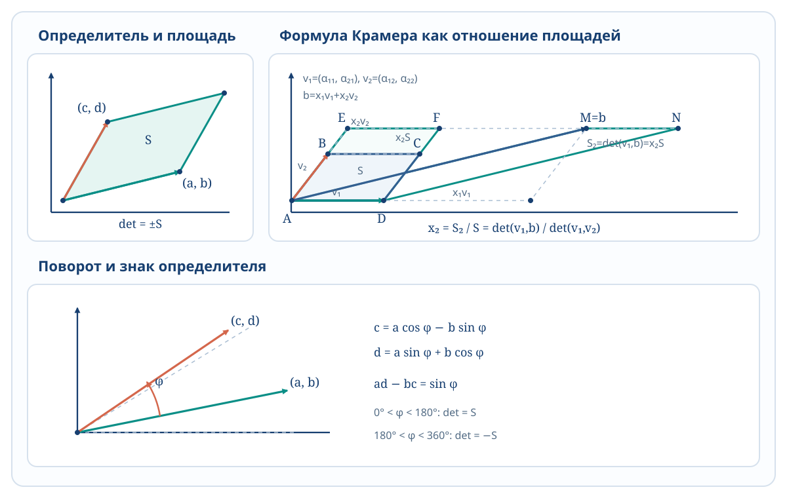

В таком случае \(f\) называется интегрируемой на \([a,b]\). Обозначение: \(I=\int_a^b f(x)\,dx\).
\(f(x)\equiv C\Rightarrow f\) интегрируема на \([a,b]\) и \(\int_a^b C\,dx=C(b-a)\).
Утверждение Если \(f\) интегрируема на \([a,b]\), то \(f\) ограничена на \([a,b]\).
Предположим, что \(f\) неограничена, \(T=\{x_k\}\). Тогда \(f\) не ограничена на некотором \([x_{k_0-1},x_{k_0}]\). Выберем \(c_k\) при \(k\ne k_0\) произвольно. Точку \(c_{k_0}\) можно выбрать так, что \(f(c_{k_0})\) достаточно велико по модулю; тогда \(\sigma(f,T,C)\) будет сколь угодно большой по модулю.
1.2 Сумма Дарбу
Определение: \([a,b]\), \(T=\{x_k\}\) — разбиение, \(f:[a,b]\to\mathbb R\) — ограничена. \(m_k=\inf_{[x_{k-1},x_k]}f\), \(M_k=\sup_{[x_{k-1},x_k]}f\), \(\Delta_k=x_k-x_{k-1}\). \(s(f,T)=\sum_{k=1}^n m_k\Delta_k\), \(S(f,T)=\sum_{k=1}^n M_k\Delta_k\) — нижняя и верхняя суммы Дарбу.
\(f(c_k)\le M_k\Rightarrow f(c_k)\Delta_k\le M_k\Delta_k\Rightarrow\sigma(f,T,C)\le S(f,T)\). Для каждого \(k=1,\dots,n\) подберём \(c_k\), такое что \(f(c_k)>M_k-\dfrac{\varepsilon}{b-a}\). Тогда \(\sigma(f,T,C)=\sum_{k=1}^n f(c_k)\Delta_k>\sum_{k=1}^n M_k\Delta_k-\dfrac{\varepsilon}{b-a}\sum_{k=1}^n\Delta_k=S(f,T)-\varepsilon\). Для нижней суммы рассуждение аналогично.
Свойство 2 От добавления точки в разбиение верхняя сумма не увеличивается, а нижняя — не уменьшается.
Пусть добавлена точка \(c\in[x_{k_0-1},x_{k_0}]\). Обозначим \(M'=\sup_{[x_{k_0-1},c]}f\), \(M''=\sup_{[c,x_{k_0}]}f\). Тогда \(M',M''\le M_{k_0}\). Было: \(\dots+M_{k_0}(x_{k_0}-x_{k_0-1})\). Стало: \(\dots+M'(c-x_{k_0-1})+M''(x_{k_0}-c)\le M_{k_0}(c-x_{k_0-1})+M_{k_0}(x_{k_0}-c)\). Для нижней суммы аналогично.
Свойство 3 Любая нижняя сумма Дарбу не превосходит любую верхнюю.
Пусть \(T_1,T_2\) — разбиения и \(\widetilde T=T_1\cup T_2\). Тогда \(s(f,T_1)\le s(f,\widetilde T)\le S(f,\widetilde T)\le S(f,T_2)\).
Определение: \(I_*\overset{\mathrm{def}}=\sup_Ts(f,T)\), \(I^*\overset{\mathrm{def}}=\inf_TS(f,T)\) — нижний и верхний интегралы Дарбу.
Теорема (критерий интегрируемости) Пусть \(f:[a,b]\to\mathbb R\) ограничена. Тогда \(f\) интегрируема на \([a,b]\) тогда и только тогда, когда \(\forall\varepsilon>0\ \exists\delta>0\), такое что для любого разбиения \(T\) из \(\Delta(T)<\delta\) следует \(S(f,T)-s(f,T)<\varepsilon\).
Доказательство, \(\Rightarrow\) Пусть \(\varepsilon>0\). Возьмём \(\delta>0\) из определения интегрируемости для \(\varepsilon/3\). Тогда из \(\Delta(T)<\delta\) следует \(\lvert\sigma(f,T,C)-I\rvert<\varepsilon/3\) для любого оснащения \(C\). Значит, \(I-\varepsilon/3\le s(f,T)\le I_*\le I^*\le S(f,T)\le I+\varepsilon/3\), поэтому \(S(f,T)-s(f,T)\le2\varepsilon/3<\varepsilon\).
Доказательство, \(\Leftarrow\) Имеем \(s(f,T)\le I_*\le I^*\le S(f,T)\), поэтому \(I^*-I_*\le S(f,T)-s(f,T)\), а правая часть может быть сколь угодно малой. Следовательно, \(I^*=I_*\overset{\mathrm{def}}=I\). Для произвольного оснащения \(C\): \(s(f,T)\le\sigma(f,T,C)\le S(f,T)\) и \(s(f,T)\le I\le S(f,T)\). Поэтому \(\lvert I-\sigma(f,T,C)\rvert\le S(f,T)-s(f,T)<\varepsilon\).
\(I_*\le I^*\).
Если \(f\) непрерывна на \([a,b]\), то \(f\) интегрируема на \([a,b]\).
Пусть \(\varepsilon>0\). По теореме Кантора о равномерной непрерывности найдём \(\delta>0\), для которого \(\lvert t_1-t_2\rvert<\delta\Rightarrow\lvert f(t_1)-f(t_2)\rvert<\varepsilon/(b-a)\). Возьмём разбиение \(T\) с \(\Delta(T)<\delta/2\). Тогда по теореме Вейерштрасса \(M_k-m_k<\varepsilon/(b-a)\), и \(S(f,T)-s(f,T)=\sum_{k=1}^n(M_k-m_k)\Delta_k<\dfrac{\varepsilon}{b-a}\sum_{k=1}^n\Delta_k=\varepsilon\).
Если \(f\) монотонна на \([a,b]\), то \(f\) интегрируема на \([a,b]\).
Без ограничения общности \(f\uparrow\). Тогда \(M_k=f(x_k)\), \(m_k=f(x_{k-1})\), и \(S(f,T)-s(f,T)=\sum_{k=1}^n(f(x_k)-f(x_{k-1}))\Delta_k<\delta\sum_{k=1}^n(f(x_k)-f(x_{k-1}))=\delta(f(b)-f(a))\). Подойдёт \(\delta=\varepsilon/(f(b)-f(a))\). Если \(f(b)=f(a)\), то из монотонности следует \(f\equiv f(a)\) на \([a,b]\).
\(\int_0^1x^2\,dx=1/3\), поскольку \(S_n=\sum_{k=1}^n\dfrac1n\dfrac{k^2}{n^2}=\dfrac{1^2+2^2+\dots+n^2}{n^3}=\dfrac{n(n+1)(2n+1)}{6n^3}\xrightarrow[n\to\infty]{}\dfrac13\).
\(D\) — функция Дирихле. Она не интегрируема ни на одном отрезке.
Для любого \([a,b]\), любого разбиения \(T\) и каждого \(k\) имеем \(M_k=1\), \(m_k=0\). Следовательно, \(S(D,T)-s(D,T)=\sum\Delta_k=b-a\) (!).
Если изменить значение функции в конечном наборе точек, то интегрируемость сохранится и интеграл не изменится.
Пусть значение изменено в \(m\) точках: была \(f\), стала \(\widetilde f\). Если \(\lvert f\rvert\le C_1\), то \(\lvert\widetilde f\rvert\le\widetilde C_1\). Тогда \(\lvert\sigma(f,T,C)-\sigma(\widetilde f,T,C)\rvert\le\underbrace{2m(C_1+\widetilde C_1)}_{\mathrm{const}}\Delta(T)\xrightarrow[\Delta(T)\to0]{}0\).
Теорема (интегрируемость на подотрезках) 1. Если \(f\) интегрируема на \([a,b]\) и \([c,d]\subset[a,b]\), то \(f\) интегрируема на \([c,d]\). 2. Если \(c\in[a,b]\), а \(f\) интегрируема на \([a,c]\) и \([c,b]\), то \(f\) интегрируема на \([a,b]\).
Доказательство пункта 1 Пусть \(\varepsilon>0\). Найдём \(\delta>0\) для \([a,b]\), такое что \(\Delta(T)<\delta\Rightarrow S(f,T)-s(f,T)<\varepsilon\). Если \(T_1\) — разбиение \([c,d]\) с \(\Delta(T_1)<\delta\), дополним его до разбиения \(T\) отрезка \([a,b]\). Тогда \(S(f,T_1)-s(f,T_1)\le S(f,T)-s(f,T)<\varepsilon\).
Доказательство пункта 2 Пусть \(\varepsilon>0\). Найдём \(\delta>0\), подходящее одновременно для разбиений \(T_1\) отрезка \([a,c]\) и \(T_2\) отрезка \([c,b]\), так что \(\Delta(T_i)<\delta\Rightarrow S(f,T_i)-s(f,T_i)<\varepsilon/3\). Пусть \(T\) — разбиение \([a,b]\), \(\Delta(T)<\delta\), и \(c\in[x_{k-1},x_k]\). При \(\lvert f\rvert\le M\) и \(\delta<\varepsilon/(6M)\) получаем \(S(f,T)-s(f,T)=\Sigma_1+(M_k-m_k)\Delta_k+\Sigma_2<\varepsilon/3+\varepsilon/3+\varepsilon/3=\varepsilon\).
Следствие Если \(f\) кусочно непрерывна на \([a,b]\), то \(f\) интегрируема на \([a,b]\).
1.3 Свойства интеграла
1. Аддитивность по отрезку
Пусть \(f\) интегрируема на \([a,b]\), \(c\in(a,b)\). Тогда \(\int_a^bf=\int_a^cf+\int_c^bf\).
По теореме из § 1.2 функция \(f\) интегрируема на \([a,c]\) и \([c,b]\). Разобьём оба отрезка на \(n\) равных частей. Пусть \(\sigma_n'\) — интегральная сумма для \([a,c]\), \(\sigma_n''\) — для \([c,b]\). Тогда \(\sigma_n=\sigma_n'+\sigma_n''\) — интегральная сумма для \([a,b]\). Переходя к пределу при \(n\to\infty\), получаем \(\int_a^bf=\int_a^cf+\int_c^bf\).
Если для \(a>b\) положить по определению \(\int_a^bf=-\int_b^af\), а \(\int_a^af=0\), то аддитивность верна при любом расположении \(a,b,c\), если \(f\) интегрируема на наибольшем отрезке.
Пусть \(f,g\) интегрируемы на \([a,b]\). Тогда \(\lvert f\rvert\) и \(\alpha f+\beta g\) интегрируемы на \([a,b]\).
Для функции \(h\): \(S(h,T)-s(h,T)=\sum_{k=1}^n(M_k-m_k)\Delta_k\). Если \(x,y\in[x_{k-1},x_k]\), то \(\lvert\alpha f(x)+\beta g(x)-\alpha f(y)-\beta g(y)\rvert\le\lvert\alpha\rvert\,\lvert f(x)-f(y)\rvert+\lvert\beta\rvert\,\lvert g(x)-g(y)\rvert\). Следовательно, колебание \(\alpha f+\beta g\) не превосходит суммы соответствующих колебаний \(f\) и \(g\), умноженных на \(\lvert\alpha\rvert\) и \(\lvert\beta\rvert\). Для \(\lvert f\rvert\) используем неравенство \(\bigl\lvert|f(x)|-|f(y)|\bigr\rvert\le|f(x)-f(y)|\).
2. Линейность по функции
Если \(f,g\) интегрируемы на \([a,b]\), \(\alpha,\beta\in\mathbb R\), то \(\int_a^b(\alpha f+\beta g)=\alpha\int_a^bf+\beta\int_a^bg\).
Разобьём отрезок на \(n\) частей. Тогда \(\sigma_n(\alpha f+\beta g)=\alpha\sigma_n(f)+\beta\sigma_n(g)\), поскольку \(\sum(\alpha f(c_k)+\beta g(c_k))\Delta_k=\alpha\sum f(c_k)\Delta_k+\beta\sum g(c_k)\Delta_k\). Переходим к пределу.
3. Монотонность интеграла
Пусть \(f,g\) интегрируемы на \([a,b]\) и \(f\le g\) на \([a,b]\). Тогда \(\int_a^bf\le\int_a^bg\).
Следствие 1 Если \(f\ge0\), то \(\int_a^bf\ge0\).
Следствие 2 Если \(m\le f\le M\), то \(m(b-a)\le\int_a^bf\le M(b-a)\).
Следствие 3 Пусть \(f\ge0\), \(f(x_0)>0\), и \(f\) непрерывна в точке \(x_0\). Тогда \(\int_a^bf>0\).
Из непрерывности в \(x_0\) и \(f(x_0)>0\) следует, что существует окрестность \(U(x_0)\), на которой \(f(x)>\varepsilon>0\). Выберем \([\alpha,\beta]\subset U(x_0)\). Тогда \(\int_a^bf=\underbrace{\int_a^\alpha f}_{\ge0}+\underbrace{\int_\alpha^\beta f}_{>\varepsilon(\beta-\alpha)}+\underbrace{\int_\beta^bf}_{\ge0}>0\).
4. Оценка модуля интеграла
Если \(f\) интегрируема на \([a,b]\), то \(\left|\int_a^bf\right|\le\int_a^b|f|\).
Пусть \(f,g\) интегрируемы на \([a,b]\), \(m\le f(x)\le M\) на \([a,b]\), \(g\ge0\). Тогда \(\int_a^bf(x)g(x)\,dx=\mu\int_a^bg(x)\,dx\), где \(\mu\in[m,M]\).
Из \(mg(x)\le f(x)g(x)\le Mg(x)\) следует \(m\int_a^bg(x)\,dx\le\int_a^bf(x)g(x)\,dx\le M\int_a^bg(x)\,dx\).
Если \(f,g\) интегрируемы на \([a,b]\), то \(fg\) также интегрируема.
\(\lvert f(x)g(x)-f(y)g(y)\rvert=\lvert f(x)g(x)-f(x)g(y)+f(x)g(y)-f(y)g(y)\rvert\le|f(x)|\,|g(x)-g(y)|+|g(y)|\,|f(x)-f(y)|\). Ограниченность \(f,g\) и критерий Дарбу дают требуемое.
Следствие 1 Пусть \(f\) непрерывна на \([a,b]\), \(g\) интегрируема и \(g\ge0\). Тогда существует \(c\in[a,b]\), для которого \(\int_a^bf(x)g(x)\,dx=f(c)\int_a^bg(x)\,dx\).
Следствие 2 Если \(f\) интегрируема на \([a,b]\), то существует \(\mu\), такое что \(\int_a^bf(x)\,dx=\mu(b-a)\).
Следствие 3 Если \(f\) непрерывна на \([a,b]\), то существует \(c\in[a,b]\), для которого \(\int_a^bf(x)\,dx=f(c)(b-a)\).
1.4 Интеграл с переменным верхним пределом. Первообразная
Определение: Пусть \(f\) интегрируема на \([a,b]\). Функция \(\Phi(x)=\int_a^xf\), \(x\in[a,b]\), называется интегралом с переменным верхним пределом.
Теорема Барроу Пусть \(f\) непрерывна в точке \(x_0\), а \(\Phi\) определена в окрестности \(x_0\). Тогда \(\Phi'(x_0)=f(x_0)\).
Докажем по определению: \(\left|\dfrac{\Phi(x_0+h)-\Phi(x_0)}h-f(x_0)\right|=\left|\dfrac1h\left(\int_a^{x_0+h}f-\int_a^{x_0}f\right)-\dfrac1h\int_{x_0}^{x_0+h}f(x_0)\right|\) \(=\left|\dfrac1h\int_{x_0}^{x_0+h}(f(x)-f(x_0))\,dx\right|\le\dfrac1{|h|}\left|\int_{x_0}^{x_0+h}|f(x)-f(x_0)|\,dx\right|.\) По непрерывности в \(x_0\), для любого \(\varepsilon>0\) существует \(\delta>0\), такое что \(|x-x_0|<\delta\Rightarrow|f(x)-f(x_0)|<\varepsilon\). Поэтому при \(|h|<\delta\) последнее выражение не превосходит \(|h|\varepsilon/|h|=\varepsilon\).
Определение: Пусть \(A\subset\mathbb R\). Функция \(F\) называется первообразной функции \(f\) на \(A\), если \(F'(x)=f(x)\) для всех \(x\in A\).
Утверждение Пусть \(F_1,F_2\) — первообразные \(f\) на \(\langle a,b\rangle\). Тогда \(F_1-F_2=\mathrm{const}\).
Положим \(g(x)=F_1(x)-F_2(x)\). Для каждого \(x\in\langle a,b\rangle\) имеем \(g'(x)=F_1'(x)-F_2'(x)=0\). Для любых \(x_1,x_2\in\langle a,b\rangle\) по теореме Лагранжа существует \(c\in\langle x_1,x_2\rangle\), такое что \(g(x_1)-g(x_2)=g'(c)(x_1-x_2)=0\). Значит, \(g\) постоянна.
Теорема (формула Ньютона–Лейбница) Пусть \(F\) — первообразная \(f\) на \([a,b]\), а \(f\) интегрируема на \([a,b]\). Тогда \(\int_a^bf(x)\,dx=F(b)-F(a)=F(x)\big|_a^b\).
Функция \(\Phi(x)=\int_a^xf\) является первообразной \(f\). Поэтому \(\Phi=F+C\), и \(F(b)-F(a)=\Phi(b)-\Phi(a)=\int_a^bf\).
Определение: Пусть \(f:\langle a,b\rangle\to\mathbb R\) и у \(f\) есть первообразная. Неопределённым интегралом \(f\) называется множество всех первообразных \(f\) на \(\langle a,b\rangle\). Обозначение: \(\int f(x)\,dx\).
\(\int f(x)\,dx=\{F(x)+C\mid C\in\mathbb R\}\), где \(F\) — некоторая первообразная. Обычно пишут \(\int f(x)\,dx=F(x)+C\).
Утверждение (линейность неопределённого интеграла) Пусть \(f,g\) имеют первообразные на \(\langle a,b\rangle\), \(\alpha,\beta\in\mathbb R\), \(\alpha^2+\beta^2>0\). Тогда \(\alpha f+\beta g\) имеет первообразную и \(\int(\alpha f+\beta g)=\alpha\int f+\beta\int g\).
Пусть \(H\) принадлежит правой части. Тогда \(H=\alpha F+\beta G\), где \(F'=f\), \(G'=g\), поэтому \(H'=\alpha f+\beta g\), то есть \(H\) принадлежит левой части. Обратно, пусть \(H\) принадлежит левой части, а \(F\) — первообразная \(f\). Без ограничения общности \(\beta\ne0\). Положим \(G=(H-\alpha F)/\beta\). Тогда \(G'=(H'-\alpha F')/\beta=(\alpha f+\beta g-\alpha f)/\beta=g\), и \(H=\alpha F+\beta G\).
Теорема о замене переменной в неопределённом интеграле Пусть \(\varphi\) непрерывно дифференцируема. Тогда \(\int f(\varphi(t))\varphi'(t)\,dt=\int f(x)\,dx\), где \(x=\varphi(t)\).
Пусть \(F\) — первообразная \(f\), то есть \(\int f(x)\,dx=F(x)+C\). Тогда \((F(\varphi(t)))'=F'(\varphi(t))\varphi'(t)=f(\varphi(t))\varphi'(t)\).
\(\int\sqrt{1-x^2}\,dx=\left[\begin{array}{l}x=\cos t\\dx=-\sin t\,dt\end{array}\right]=\int-\sin^2t\,dt=\dfrac12\int(\cos2t-1)\,dt\) \(=\dfrac14\sin2t-\dfrac12t+C=\dfrac12x\sqrt{1-x^2}-\dfrac12\arccos x+C\). Поэтому \(\int_{-1}^1\sqrt{1-x^2}\,dx=F(1)-F(-1)=-\dfrac12\arccos1+\dfrac12\arccos(-1)=\dfrac\pi2\).
Теорема (интегрирование по частям) Пусть \(f,g\) дифференцируемы и функция \(fg'\) имеет первообразную. Тогда \(f'g\) также имеет первообразную и \(\int f'g=fg-\int fg'\).
\((fg)'=f'g+fg'\Rightarrow f'g=(fg)'-fg'\). Значит, \(\int g(x)\underbrace{f'(x)\,dx}_{df}=f(x)g(x)-\int f(x)\underbrace{g'(x)\,dx}_{dg}\), то есть \(\int g\,df=fg-\int f\,dg\).
Теорема (замена переменной в определённом интеграле) Пусть \(\varphi:[\alpha,\beta]\to[A,B]\), \(\varphi\) дифференцируема на \([\alpha,\beta]\), а \(f\) непрерывна на \([A,B]\). Тогда
Пусть \(F\) — первообразная \(f\) на \([A,B]\). Тогда \((F(\varphi(t)))'=F'(\varphi(t))\varphi'(t)=f(\varphi(t))\varphi'(t)\), и \(\int_\alpha^\beta f(\varphi(t))\varphi'(t)\,dt=F(\varphi(t))\big|_\alpha^\beta=F(x)\big|_{\varphi(\alpha)}^{\varphi(\beta)}=\int_{\varphi(\alpha)}^{\varphi(\beta)}f(x)\,dx\).
Теорема (интегрирование по частям) Пусть \(f,g\) непрерывно дифференцируемы на \([a,b]\). Тогда \(\int_a^bf'g=(fg)\big|_a^b-\int_a^bfg'\).
Упражнения
\(\int_{-\pi/4}^{\pi/4}\ln(\cos x)\sin x\,dx\).
\(\int_1^2x^2e^x\,dx\).
\(\int_0^1x\sqrt{1-x^2}\,dx\).
\(\int_0^1\operatorname{arctg}x\,dx\).
Утверждение 1. Если \(f\) нечётная, то \(\int_{-a}^af=0\). 2. Если \(f\) чётная, то \(\int_{-a}^af=2\int_0^af\).
Для нечётной функции заменой \(x=-t\) получаем \(\int_{-a}^0f(x)\,dx=-\int_a^0f(-t)\,dt=\int_0^a-f(t)\,dt=-\int_0^af(t)\,dt\). Следовательно, интеграл на симметричном отрезке равен нулю. Для чётной функции аналогично обе половины интеграла равны.
Утверждение Пусть \(f\) периодическая с периодом \(T\). Тогда для любого \(a\) выполняется \(\int_a^{a+T}f=\int_0^Tf\).
Сдвигом на целое число периодов приведём \(a\) к \(a_0\in[0,T)\). Тогда \(\int_a^{a+T}f(x)\,dx=\int_{a_0}^{a_0+T}f(x)\,dx=\int_{a_0}^0f(x)\,dx+\int_0^{a_0+T}f(x)\,dx\) \(=\int_{a_0+T}^Tf(x)\,dx+\int_0^{a_0+T}f(x)\,dx=\int_0^Tf(x)\,dx\).
1.7 Квадрируемость. Интеграл как площадь
Определение: Пусть \(\mathcal P\) — множество всех многоугольных фигур, \(A\) — множество точек плоскости. \(S_*(A)=\sup_{P\in\mathcal P,\,P\subset A}S(P)\) — внутренняя площадь. \(S^*(A)=\inf_{P\in\mathcal P,\,P\supset A}S(P)\) — внешняя площадь. Если \(S^*(A)=S_*(A)\), то множество \(A\) называется квадрируемым, а их общее значение — площадью \(A\).
Пусть \(A=K\cap\mathbb Q^2\), где \(K\) — единичный квадрат. Тогда \(S_*(A)=0\), а \(S^*(A)=1\).
Определение: Пусть \(f\ge0\) на \([a,b]\). Подграфиком \(f\) называется множество \(\{(x,y)\mid x\in[a,b],\ 0\le y\le f(x)\}\).
Ограниченное множество \(A\) квадрируемо тогда и только тогда, когда для каждого \(\varepsilon>0\) существуют \(P,Q\in\mathcal P\), такие что \(P\subset A\subset Q\) и \(S(Q)-S(P)<\varepsilon\).
Пусть \(f\) интегрируема и неотрицательна на \([a,b]\). Тогда подграфик \(f\) квадрируем и \(S_{\mathrm{подгр}}=\int_a^bf(x)\,dx\).
Пусть \(\varepsilon>0\). Выберем разбиение \(T\) отрезка \([a,b]\), для которого \(S(f,T)-s(f,T)<\varepsilon\). Прямоугольники высот \(m_k\) образуют внутреннюю многоугольную фигуру площади \(s(f,T)\), а прямоугольники высот \(M_k\) — внешнюю фигуру площади \(S(f,T)\). Разность их площадей меньше \(\varepsilon\), поэтому подграфик квадрируем. Переход к общей площади даёт \(S_{\mathrm{подгр}}=\int_a^bf(x)\,dx\).
Теория чисел
§ 1. Лемма об уточнении показателя
Пусть \(r\in\mathbb Q\) и \(r=p^k\dfrac ab\), где \(k\in\mathbb Z\), \(a\ndivby p\), \(b\ndivby p\). Тогда \(v_p(r)=k\), а \(\lVert r\rVert_p=p^{-k}\).
LTE-лемма Пусть \(a,b\in\mathbb Z\), \(n\in\mathbb N\), \(p\in\mathbb P\), \(a\ndivby p\), \(b\ndivby p\) и \((a-b)\divby p\). При \(p\ne2\), а также при \(p=2\) и дополнительном условии \((a-b)\divby 4\), выполняется равенство
\[v_p(a^n-b^n)=v_p(a-b)+v_p(n)\]
1. Случай \(n\ndivby p\). Разложим разность степеней: \(a^n-b^n=(a-b)(a^{n-1}+a^{n-2}b+\dots+b^{n-1})\). Поскольку \(a\equiv b\pmod p\), вторая скобка сравнима с \(na^{n-1}\not\equiv0\pmod p\). Следовательно, она не делится на \(p\), и \(v_p(a^n-b^n)=v_p(a-b)\).
Так как \(tp=a-b\), валюация первого слагаемого равна \(v_p(a-b)+1\). При \(2\le k\le p-1\) имеем \(\binom pk\divby p\), поэтому валюация \(k\)-го слагаемого не меньше \(1+k\,v_p(a-b)>v_p(a-b)+1\). Валюация последнего слагаемого равна \(p\,v_p(a-b)\). Если \(p\ne2\), то \(p\,v_p(a-b)>v_p(a-b)+1\); если \(p=2\), то по условию \(v_2(a-b)\ge2\), и снова \(2v_2(a-b)>v_2(a-b)+1\). Значит, наименьшую валюацию имеет только первое слагаемое, поэтому \(v_p(a^p-b^p)=v_p(a-b)+1\).
3. Общий случай. Пусть \(n=kp^\alpha\), где \(k\ndivby p\). Применим случай \(n=p\) ровно \(\alpha\) раз, а затем случай \(n\ndivby p\):
Делимость порядка Если \(a^s\equiv1\pmod p\), то \(s\divby\operatorname{ord}_p a\).
Пусть \(p\in\mathbb P\), \(x=\dfrac{p^p-1}{p-1}\), а \(q\in\mathbb P\) и \(x\divby q\). Предположим, что \((p-1)\divby q\). Тогда по LTE \(v_q(p^p-1)=v_q(p-1)+v_q(p)=v_q(p-1)\), что противоречит \(x\divby q\). Значит, \(p^p\equiv1\pmod q\), но \(p\not\equiv1\pmod q\). Следовательно, \(\operatorname{ord}_q p=p\), откуда \((q-1)\divby p\), то есть \(q\equiv1\pmod p\).
Дирихле Если \((a,b)=1\), то в арифметической прогрессии \(an+b\) бесконечно много простых чисел.
§ 2. Квадратичные вычеты
Квадратичный вычет — Пусть \(p\in\mathbb P\), \(a\in\mathbb F_p\), \(a\ne0\). Число \(a\) называется квадратичным вычетом по модулю \(p\), если существует \(x\in\mathbb F_p\), для которого \(x^2=a\).
Для нечётного простого \(p\) из \(x^2=a\) следует \((-x)^2=a\). Кроме того, \(x^2\equiv y^2\pmod p\Rightarrow (x-y)(x+y)\divby p\). Поэтому \(1^2,2^2,\ldots,\left(\frac{p-1}{2}\right)^2\) — в точности все ненулевые квадратичные вычеты по модулю \(p\).
Символ Лежандра — Для нечётного простого \(p\) символ Лежандра определяется формулой
Квадратичные вычеты — в точности все корни многочлена \(x^{(p-1)/2}-1\). Поэтому \(a\) — квадратичный вычет тогда и только тогда, когда \(a^{(p-1)/2}\equiv1\pmod p\). Из \(x^{p-1}-1=(x^{(p-1)/2}-1)(x^{(p-1)/2}+1)\) следует, что для невычетов значение равно \(-1\).
Свойства символа Лежандра
\(\left(\frac1p\right)=1\), \(\left(\frac{-1}{p}\right)=(-1)^{(p-1)/2}\), \(\left(\frac{x^2}{p}\right)=1\) при \(x\ndivby p\).
\(\left(\frac{ab^2}{p}\right)=\left(\frac ap\right)\) при \(b\ndivby p\).
Если \(a=\prod q_i^{\alpha_i}\), то \(\left(\frac ap\right)=\prod_{\alpha_i\ndivby 2}\left(\frac{q_i}{p}\right)\).
Критерий Гаусса Пусть \(p\) — нечётное простое и \(a\ndivby p\). Тогда \(\left(\frac ap\right)=(-1)^\ell\), где \(\ell\) — количество чисел среди \(a,2a,\ldots,\frac{p-1}{2}a\), у которых наименьший по абсолютной величине вычет отрицателен.
Для каждого \(i=1,2,\ldots,\frac{p-1}{2}\) запишем \(ia\equiv(-1)^{\ell_i}r_i\pmod p\), где \(1\le r_i\le\frac{p-1}{2}\), а \(\ell_i=1\) ровно тогда, когда наименьший по абсолютной величине вычет числа \(ia\) отрицателен. Если \(r_i=r_j\), то \(ia\equiv\pm ja\pmod p\). Отсюда \((i-j)\divby p\) или \((i+j)\divby p\). При \(1\le i,j\le\frac{p-1}{2}\) это возможно только при \(i=j\). Значит, числа \(r_1,\ldots,r_{(p-1)/2}\) попарно различны и являются перестановкой чисел \(1,2,\ldots,\frac{p-1}{2}\). Перемножая сравнения и обозначая \(\ell=\ell_1+\cdots+\ell_{(p-1)/2}\), получаем
Сокращая на \(\left(\frac{p-1}{2}\right)!\), получаем \(a^{(p-1)/2}\equiv(-1)^\ell\pmod p\). По критерию Эйлера левая часть сравнима с \(\left(\frac ap\right)\), откуда следует требуемое равенство.
Второе дополнение к закону взаимности Для нечётного простого \(p\) выполняется \(\left(\frac2p\right)=(-1)^{(p^2-1)/8}\).
Рассмотрим \(2,4,\ldots,p-1\). Положительный наименьший вычет имеют те числа \(2x\), для которых \(2x<p/2\), то есть \(x<p/4\). Таких чисел \(\lfloor p/4\rfloor\), поэтому \(\ell=\frac{p-1}{2}-\lfloor p/4\rfloor\). Запишем \(p=8k+r\), где \(r\in\{1,3,5,7\}\). Тогда \(\ell=4k+\frac{r-1}{2}-2k-\lfloor r/4\rfloor\). Следовательно, \(\ell\divby 2\iff r=1\) или \(r=7\), а \(\ell\ndivby 2\iff r=3\) или \(r=5\). Итак, \(\ell\divby2\iff p\equiv1,7\pmod8\), а \(\ell\ndivby2\iff p\equiv3,5\pmod8\).
Символ Якоби — Пусть \(m\in\mathbb N\), \(m\ndivby 2\), \(m=p_1\cdots p_k\), причём простые множители могут совпадать. Тогда \(\left(\frac am\right)\stackrel{\mathrm{def}}=\left(\frac a{p_1}\right)\cdots\left(\frac a{p_k}\right)\).
\(\left(\frac2{15}\right)=\left(\frac23\right)\left(\frac25\right)=1\), но \(2\) — невычет по модулю \(15\).
Выполнение всех свойств символа Лежандра, кроме формул для \(\left(\frac{-1}{m}\right)\) и \(\left(\frac2m\right)\), очевидно.
Критерий Эйлера в общем случае неверен: \(\left(\frac7{15}\right)=\left(\frac75\right)\left(\frac73\right)=-1\).
\(\left(\frac{-1}{m}\right)=\left(\frac{-1}{p_1}\right)\cdots\left(\frac{-1}{p_k}\right)=(-1)^{(p_1-1)/2+\cdots+(p_k-1)/2}=(-1)^{(m-1)/2}\). Действительно, если \(s\) простых множителей \(p_i\), считая с повторениями, сравнимы с \(3\pmod4\), то \(\sum_i(p_i-1)/2\equiv s\pmod2\). С другой стороны, \(m=p_1\cdots p_k\equiv(-1)^s\pmod4\), поэтому \((m-1)/2\equiv s\pmod2\).
\(\left(\frac2m\right)=(-1)^{(p_1^2-1)/8+\cdots+(p_k^2-1)/8}=(-1)^{(m^2-1)/8}\). Здесь \((p_i^2-1)/8\) нечётно тогда и только тогда, когда \(p_i\equiv\pm3\pmod8\). Поэтому сумма показателей нечётна тогда и только тогда, когда количество таких множителей нечётно, то есть когда \(p_1\cdots p_k\equiv\pm3\pmod8\). Это равносильно нечётности \((m^2-1)/8\).
§ 3. Квадратичный закон взаимности
Пусть \(p,q\in\mathbb P\), \(p\ne q\), \(p\ndivby 2\), \(q\ndivby 2\). Тогда
По критерию Гаусса \(\left(\frac pq\right)=(-1)^{\ell_1}\), где \(\ell_1\) — число таких \(x=1,\ldots,\frac{q-1}{2}\), для которых наименьший по абсолютной величине вычет \(px\) отрицателен. Для каждого такого \(x\) существует не более одного \(y\), причём \(-q/2<px-qy<0\) и \(y>0\). Кроме того, \(qy<px+q/2<pq/2+q/2=q(p+1)/2\), откуда \(y<(p+1)/2\), то есть \(y\le(p-1)/2\). Поэтому \(\ell_1\) считает пары \((x,y)\) из прямоугольника \(1\le x\le(q-1)/2\), \(1\le y\le(p-1)/2\), для которых \(-q/2<px-qy<0\). Аналогично, \(\left(\frac qp\right)=(-1)^{\ell_2}\), где \(0<px-qy<p/2\). Значит, произведение символов равно \((-1)^\ell\), где \(\ell\) — число пар с \(-q/2<px-qy<p/2\).
Это отображение разбивает пары на пары, кроме возможной неподвижной точки. Она существует тогда и только тогда, когда \(q=4x-1\) и \(p=4y-1\), то есть \(p\equiv q\equiv3\pmod4\). Поэтому \(\ell\) нечётно ровно в этом случае.
Руссо Рассмотрим \(\mathbb Z_{pq}^{*}=\{k=1,\ldots,pq-1\mid(k,pq)=1\}\). По китайской теореме об остатках отождествим его с \(\mathbb Z_p^{*}\times\mathbb Z_q^{*}=\{(a,b)\mid a=1,\ldots,p-1;\ b=1,\ldots,q-1\}\). Положим \(A=\{(a,b)\mid1\le a\le(p-1)/2,\ 1\le b\le q-1\}\), \(B=\{(a,b)\mid1\le a\le p-1,\ 1\le b\le(q-1)/2\}\), \(C=\{k\mid1\le k\le(pq-1)/2,\ (k,pq)=1\}\) и обозначим через \(\Pi_1,\Pi_2,\Pi_3\) произведения элементов этих множеств. Произведение всех элементов группы равно \(((p-1)!)^{q-1},((q-1)!)^{p-1})=(1,1)\). Так как каждое из множеств \(A,B,C\) содержит ровно один элемент из каждой пары \(u,-u\), а \((p-1)(q-1)/2\) чётно, имеем \(\Pi_1^2=\Pi_2^2=\Pi_3^2=1\). При этом \(\Pi_1=\bigl(((p-1)/2)!^{q-1},((q-1)!)^{(p-1)/2}\bigr)\), \(\Pi_2=\bigl(((p-1)!)^{(q-1)/2},((q-1)/2)!^{p-1}\bigr)\). По модулю \(p\) среди чисел от \(1\) до \((pq-1)/2\) исключаются кратные \(q,2q,\ldots,\frac{p-1}{2}q\), поэтому \(\displaystyle \Pi_3\equiv\frac{((p-1)!)^{(q-1)/2}\,((p-1)/2)!}{q\cdot2q\cdots((p-1)/2)q}\equiv\frac{((p-1)!)^{(q-1)/2}}{q^{(p-1)/2}}\pmod p\). Аналогично, \(\displaystyle \Pi_3\equiv\frac{((q-1)!)^{(p-1)/2}}{p^{(q-1)/2}}\pmod q\). Следовательно, \(\Pi_3\left(\frac qp\right)=\Pi_2\) и \(\Pi_3\left(\frac pq\right)=\Pi_1\). Произведение \(\Pi_1\) отличается от \(\Pi_2\) только \(\frac{p-1}{2}\frac{q-1}{2}\) знаками, поэтому \(\Pi_1\Pi_2=(-1)^{(p-1)(q-1)/4}\). Перемножая два предыдущих равенства и пользуясь \(\Pi_3^2=1\), получаем требуемый закон взаимности.
Если \(\left\lfloor\dfrac{2ai}{p}\right\rfloor=k\), то \(k<\dfrac{2ai}{p}<k+1\), то есть \(\dfrac{pk}{2}<ai<\dfrac{pk}{2}+\dfrac p2\). Число \(ai\) имеет отрицательный наименьший по модулю \(p\) вычет тогда и только тогда, когда \(k\) нечётно. Поэтому сумма \(\sum_{i=1}^{(p-1)/2}\left\lfloor\dfrac{2ai}{p}\right\rfloor\) имеет ту же чётность, что и число отрицательных наименьших вычетов. Осталось применить критерий Гаусса.
По Эйзенштейну Пусть \(q\ne p\) — нечётное простое. При \(a=q\) сумма \(\sum_{i=1}^{(p-1)/2}\left\lfloor\dfrac{2q i}{p}\right\rfloor\) равна числу узлов с чётной абсциссой \(x=2i\), лежащих под прямой \(y=\dfrac{q}{p}x\) в треугольнике \(ABC\).Для примера \(p=11\), \(q=7\) отмечены узлы на чётных вертикалях под прямой. Центральная симметрия относительно \(M\) сопоставляет чётные узлы \(BMT\) нечётным узлам \(AML\).
Число узлов с чётной абсциссой в \(LMBC\) имеет ту же чётность, что и число таких узлов в \(BMT\). Центральная симметрия относительно \(M\) переводит чётные узлы \(BMT\) в нечётные узлы \(AML\). Поэтому \(\left(\dfrac{q}{p}\right)=(-1)^{\#AML}\). Аналогично, \(\left(\dfrac pq\right)=(-1)^{\#AMK}\). На прямой \(AM\) отмеченных узлов нет, откуда \(\#AML+\#AMK=\dfrac{p-1}{2}\dfrac{q-1}{2}\), и получается квадратичный закон взаимности.
Квадратичный закон взаимности для символов Якоби Пусть \(m,n\in\mathbb N\), \(m,n>1\), \(m\ndivby 2\), \(n\ndivby 2\). Тогда \(\left(\frac mn\right)\left(\frac nm\right)=(-1)^{(m-1)(n-1)/4}\).
Пусть \(m=p_1\cdots p_k\), \(n=q_1\cdots q_\ell\). Тогда \(\displaystyle \left(\frac mn\right)\left(\frac nm\right)=\prod_{i=1}^{\ell}\left(\frac{p_1\cdots p_k}{q_i}\right)\prod_{j=1}^{k}\left(\frac{q_1\cdots q_\ell}{p_j}\right)=\prod_{i=1}^{\ell}\prod_{j=1}^{k}\left(\frac{p_j}{q_i}\right)\left(\frac{q_i}{p_j}\right).\) По квадратичному закону взаимности это произведение равно \((-1)^E\), где \(\displaystyle E=\sum_{i=1}^{\ell}\sum_{j=1}^{k}\frac{p_j-1}{2}\frac{q_i-1}{2}=\left(\sum_{j=1}^{k}\frac{p_j-1}{2}\right)\left(\sum_{i=1}^{\ell}\frac{q_i-1}{2}\right).\) Поскольку \(\sum_j(p_j-1)/2\equiv(m-1)/2\pmod2\) и \(\sum_i(q_i-1)/2\equiv(n-1)/2\pmod2\), получаем \(E\equiv(m-1)(n-1)/4\pmod2\).
Первообразный корень — Пусть \(m\in\mathbb N\). Число \(g\) называется первообразным корнем по модулю \(m\), если \(\operatorname{ord}_m g=\varphi(m)\).
Если \(g\) — первообразный корень по модулю \(m\), то \(g,g^2,\ldots,g^{\varphi(m)}\) образуют приведённую систему вычетов по модулю \(m\).
Для каждого простого \(p\) существует первообразный корень по модулю \(p\).
Первое Многочлен \(x^{p-1}-1\) имеет в \(\mathbb F_p\) ровно \(p-1\) корней. Если \((p-1)\divby d\), то из разложения \(x^{p-1}-1=(x^d-1)(\ldots)\) и оценки числа корней следует, что \(x^d-1\) имеет ровно \(d\) корней. Пусть \(p-1=p_1^{\alpha_1}\cdots p_k^{\alpha_k}\). Для каждого \(i\) многочлен \(x^{(p-1)/p_i}-1\) имеет только \((p-1)/p_i\) корней, поэтому найдётся \(y_i\), для которого \(y_i^{(p-1)/p_i}\not\equiv1\pmod p\). Положим \(x_i=y_i^{(p-1)/p_i^{\alpha_i}}\). Тогда \(x_i^{p_i^{\alpha_i}}\equiv1\pmod p\), но \(x_i^{p_i^{\alpha_i-1}}=y_i^{(p-1)/p_i}\not\equiv1\pmod p\), следовательно, \(\operatorname{ord}_p x_i=p_i^{\alpha_i}\). Перемножая элементы \(x_i\) и применяя вспомогательное утверждение, получаем элемент порядка \(p_1^{\alpha_1}\cdots p_k^{\alpha_k}=p-1\).
Вспомогательное утверждение Если \(\operatorname{ord}_p x=a\), \(\operatorname{ord}_p y=b\), \((a,b)=1\), то \(\operatorname{ord}_p(xy)=ab\). Действительно, из \((xy)^n\equiv1\) следует \(x^{bn}\equiv1\), значит \(bn\divby a\) и \(n\divby a\); аналогично \(n\divby b\), поэтому \(n\divby ab\).
Второе Сначала докажем тождество \(\sum_{n\divby d}\varphi(d)=n\). Выпишем дроби \(1/n,2/n,\ldots,n/n\). После сокращения ровно \(\varphi(d)\) из них имеют знаменатель \(d\); суммируя по всем делителям \(d\) числа \(n\), получаем тождество. Теперь пусть \(N_d\) — число элементов порядка \(d\) в \(\mathbb F_p^*\). Если элемент \(a\) порядка \(d\) существует, то \(1,a,\ldots,a^{d-1}\) — все корни уравнения \(x^d=1\), а \(\operatorname{ord}_p(a^k)=d\) тогда и только тогда, когда \((k,d)=1\). Следовательно, число элементов порядка \(d\) равно либо \(0\), либо \(\varphi(d)\). Поэтому \(p-1=\sum_{(p-1)\divby d}N_d\le\sum_{(p-1)\divby d}\varphi(d)=p-1\). Равенство возможно только тогда, когда \(N_d=\varphi(d)\) для каждого делителя \(d\) числа \(p-1\). В частности, \(N_{p-1}=\varphi(p-1)>0\), то есть существует элемент порядка \(p-1\).
Первообразный корень по модулю \(m\) существует тогда и только тогда, когда \(m=2,4,p^n,2p^n\), где \(p\) — нечётное простое, \(n\in\mathbb N\).
\((\Leftarrow)\) Для \(m=2\) подходит \(1\), для \(m=4\) — \(3\). Пусть \(p\) — нечётное простое, \(\xi\) — первообразный корень по модулю \(p\).
\(\xi^{p-1}\not\equiv(\xi+p)^{p-1}\pmod{p^2}\), т. к.
Хотя бы одно из чисел \(\xi^{p-1}\) и \((\xi+p)^{p-1}\) не сравнимо с \(1\) по модулю \(p^2\). Соответствующее число \(\xi\) или \(\xi+p\) обозначим \(x\).
Следовательно, \(d=\varphi(p^n)\), и \(x\) — первообразный корень по модулю \(p^n\). Нечётный представитель найденного числа является первообразным и по модулю \(2p^n\), поскольку \(\varphi(2p^n)=\varphi(p^n)\).
\((\Rightarrow)\) Пусть \(x\) — первообразный корень по модулю \(m\). Для нечётного \(x\) имеем \(x^2\equiv1\pmod8\). Тогда при \(n\ge3\)
\(\Rightarrow\varphi(p_i^{\alpha_i})\) попарно взаимно просты. Значит, нечётных простых делителей не более одного. Если \(m\) чётен и имеет нечётный простой делитель, то \(\lvert m\rvert_2=1\). Следовательно, остаются только \(m=2,4,p^n\) и \(2p^n\).
§ 5. Сравнения с неизвестными
Сравнение \(a_nx^n+\dots+a_0\equiv0\pmod p\), где \(a_n\ndivby p\), эквивалентно сравнению \(f(x)\equiv0\pmod p\) с примитивным многочленом \(f\).
Любое сравнение \(f(x)\equiv0\pmod p\) можно заменить эквивалентным \(g(x)\equiv0\pmod p\), где \(\deg g<p\).
Разделим \(f\) с остатком на \(x^p-x\): \(f(x)=g_1(x)(x^p-x)+g(x)\). Слагаемое \(g_1(x)(x^p-x)\) равно нулю во всех точках \(\mathbb F_p\), поэтому сравнения эквивалентны.
Любое сравнение \(f(x_1,\ldots,x_n)\equiv0\pmod p\) можно заменить эквивалентным \(g(x_1,\ldots,x_n)\equiv0\pmod p\), где степень \(g\) по каждой переменной меньше \(p\).
Пусть в \(f\) имеется одночлен \(Ax_1^{i_1}\cdots x_k^{i_k}\cdots x_n^{i_n}\) с \(i_k\ge p\). Заменим \(f\) на \(f-Ax_1^{i_1}\cdots x_k^{i_k-p}\cdots x_n^{i_n}(x_k^p-x_k)\). При этом одночлен \(Ax_1^{i_1}\cdots x_k^{i_k}\cdots x_n^{i_n}\) уничтожается и вместо него появляется \(Ax_1^{i_1}\cdots x_k^{i_k-p+1}\cdots x_n^{i_n}\). Значения многочлена во всех точках \(\mathbb F_p^n\) не меняются, а степень по \(x_k\) уменьшается. Продолжая этот процесс, уменьшим степень по каждой переменной до значения, меньшего \(p\).
Если степень \(f\in\mathbb Z[x_1,\ldots,x_n]\) по каждой переменной меньше \(p\) и \(f(x_1,\ldots,x_n)\equiv0\pmod p\) для всех \((x_1,\ldots,x_n)\), то все коэффициенты \(f\) делятся на \(p\).
Шевалле Пусть \(f\in\mathbb Z[x_1,\ldots,x_n]\), \(\deg f<n\), \(f(0,\ldots,0)=0\). Тогда для каждого \(p\in\mathbb P\) сравнение \(f(x_1,\ldots,x_n)\equiv0\pmod p\) имеет нетривиальное решение.
Предположим, что нулевой набор — единственное решение. Заменим \(f^{p-1}\) эквивалентным многочленом \(g\), степень которого по каждой переменной меньше \(p\). Как функции на \(\mathbb F_p^n\) имеем
Имеем \(\deg g\le\deg f^{p-1}=(p-1)\deg f<n(p-1)\). Поэтому коэффициент одночлена \(x_1^{p-1}\cdots x_n^{p-1}\) в \(g\) равен нулю. В правой части этот одночлен имеет коэффициент \((-1)^{n+1}\not\equiv0\pmod p\). Следовательно, разность двух частей — ненулевой многочлен, степень которого по каждой переменной меньше \(p\), но он обращается в нуль во всех точках \(\mathbb F_p^n\). Это противоречит предыдущей теореме.
Китайская теорема об остатках Если \(m=p_1^{\alpha_1}\cdots p_k^{\alpha_k}\), то \(f(x)\equiv0\pmod m\) равносильно системе сравнений по модулям \(p_i^{\alpha_i}\). Если по модулю \(p_i^{\alpha_i}\) имеется \(\ell_i\) решений, то по модулю \(m\) имеется \(\ell_1\cdots\ell_k\) решений.
Подъём простого корня В каждом классе \(\bar a\pmod p\), для которого \(f(a)\equiv0\pmod p\) и \(f'(a)\not\equiv0\pmod p\), решения \(f(x)\equiv0\pmod{p^k}\) образуют один класс по модулю \(p^k\).
Индукция по \(k\). Пусть решения в классе \(\bar a\pmod p\) образуют один класс \(b\pmod{p^k}\). Все его представители по модулю \(p^{k+1}\) имеют вид \(b+tp^k\), где \(t=0,1,\ldots,p-1\). По формуле Тейлора \(f(b+tp^k)\equiv f(b)+f'(b)tp^k\pmod{p^{k+1}}\). Поэтому \(f(b+tp^k)\equiv0\pmod{p^{k+1}}\) равносильно сравнению \(f(b)/p^k+t f'(b)\equiv0\pmod p\). Так как \(f'(b)\ndivby p\), оно имеет ровно одно решение \(t\pmod p\). Следовательно, решения снова образуют один класс, теперь по модулю \(p^{k+1}\).
Случай кратного корня Пусть \(x\equiv a\pmod{p^k}\) — решение и \(f'(a)\equiv0\pmod p\). Тогда: 1) если \(f(a)\not\equiv0\pmod{p^{k+1}}\), среди чисел \(x\equiv a\pmod{p^k}\) нет решений по модулю \(p^{k+1}\); 2) если \(f(a)\equiv0\pmod{p^{k+1}}\), все такие числа удовлетворяют сравнению по модулю \(p^{k+1}\).
Гауссовы целые числа — Множество гауссовых целых чисел — это \(\mathbb Z[i]\stackrel{\mathrm{def}}=\{a+bi\mid a,b\in\mathbb Z\}\).
Арифметические операции в \(\mathbb Z[i]\) наследуются из \(\mathbb C\), поэтому выполняются коммутативность и ассоциативность сложения и умножения, существование нуля, противоположного элемента и единицы, а также дистрибутивность. Следовательно, \(\mathbb Z[i]\) — коммутативное кольцо с единицей.
Норма — Для \(z=a+bi\) положим \(N(z)\stackrel{\mathrm{def}}=a^2+b^2=|z|^2\).
Свойства нормы \(N(z_1z_2)=N(z_1)N(z_2)\). Если \(z\) обратим, то существует \(z_1\in\mathbb Z[i]\), для которого \(zz_1=1\). Тогда \(N(z)N(z_1)=1\), откуда \(N(z)=N(z_1)=1\). Следовательно, \(z\in\{-1,1,-i,i\}\). Обратно, все эти элементы обратимы. Поэтому множество единиц равно \(U=\{-1,1,-i,i\}\).
Делимость — Для \(z_1,z_2\in\mathbb Z[i]\) пишут \(z_2\divby z_1\), если существует \(z_3\in\mathbb Z[i]\), такой что \(z_2=z_1z_3\).
Свойства делимости
\(0\divby z\) и \(z\divby u\) для любого \(u\in U\).
Если \(z_1\ne0\) и \(z_2\divby z_1\), то частное единственно.
Простое гауссово число — Элемент \(p\in\mathbb Z[i]\setminus U\) называется простым, если из \(p=ab\) следует, что \(a\in U\) или \(b\in U\).
Если \(N(z)\in\mathbb P\), то \(z\) — простое гауссово число.
О делении с остатком Пусть \(a,b\in\mathbb Z[i]\), \(b\ne0\). Тогда существуют \(q,r\in\mathbb Z[i]\), для которых \(a=qb+r\) и \(N(r)<N(b)\).
Рассмотрим все числа вида \(c=(k+\ell i)b\), где \(k,\ell\in\mathbb Z\). Все они лежат в узлах квадратной сетки со стороной \(|b|\). Любая точка плоскости попадает в один из квадратов этой сетки, а расстояние от неё до ближайшей вершины меньше \(|b|\). Проведём вектор \(qb\) из начала координат в ближайшую к \(a\) вершину и положим \(r=a-qb\). Тогда \(a=qb+r\) и \(N(r)<N(b)\).Кратные \(b\) образуют квадратную решётку, порождённую векторами \(b\) и \(ib\).
Остаток не обязан быть единственным. Например, \(7+2i=(2+i)(3-i)+i=(1+i)(3-i)+3\).
Наибольший общий делитель — Наибольшим общим делителем чисел \(a,b\in\mathbb Z[i]\) называется любой максимальный по модулю их общий делитель.
Алгоритм Евклида \(a=q_1b+r_1,\ b=q_2r_1+r_2,\ r_1=q_3r_2+r_3,\ldots\). Нормы строго убывают: \(N(b)>N(r_1)>N(r_2)>\cdots\), поэтому процесс заканчивается. Последний ненулевой остаток делит \(a\) и \(b\) и делится на любой их общий делитель; это \(\gcd(a,b)\).
Линейное представление НОД Если \(d=\gcd(a,b)\), то существуют \(x,y\in\mathbb Z[i]\), для которых \(d=ax+by\). В частности, \(a\) и \(b\) взаимно просты тогда и только тогда, когда \(ax+by=1\) для некоторых \(x,y\in\mathbb Z[i]\).
Основная теорема арифметики для \(\mathbb Z[i]\) Любое целое гауссово число, необратимое и отличное от нуля, раскладывается в произведение простых, причём единственным образом с точностью до порядка сомножителей и домножения на обратимое.
Существование. Индукция по \(N(a)\). База \(N(a)=2\): числа \(\pm1\pm i\) простые. Если \(a\) простое, то всё доказано. Иначе \(a=bc\), где \(N(b),N(c)<N(a)\); по предположению индукции числа \(b\) и \(c\) раскладываются в произведения простых, а значит, раскладывается и \(a\). Единственность. Пусть \(p_1\cdots p_r=q_1\cdots q_s\) — два разложения. Тогда \(p_1\) делит произведение \(q_1\cdots q_s\), поэтому делит один из множителей, например \(q_1\). Так как \(p_1\) и \(q_1\) простые, они отличаются на обратимый множитель. Сократим их и продолжим рассуждение; так попарно совпадут все множители с точностью до порядка и домножения на обратимые элементы.
Отступление
Евклидово кольцо — Кольцо \(K\) без делителей нуля называется евклидовым, если существует евклидова норма \(d:K\to\mathbb N\cup\{0\}\), такая что для любых \(a,b\in K\), \(b\ne0\), существуют \(q,r\) с \(a=qb+r\) и \(d(r)<d(b)\).
Неприводимые и простые элементы — Элемент \(p\notin U\) неприводим, если из \(p=ab\) следует \(a\in U\) или \(b\in U\). Элемент \(p\notin U\) прост, если из \(ab\divby p\) следует \(a\divby p\) или \(b\divby p\).
Факториальное кольцо — Кольцо без делителей нуля называется факториальным, если любой ненулевой необратимый элемент раскладывается на неприводимые множители единственным образом с точностью до порядка множителей и умножения их на единицы.
Кольцо факториально тогда и только тогда, когда в нём каждый неприводимый элемент прост.
\(\sum_{n\divby d}\mu(d)=1\) при \(n=1\) и \(\sum_{n\divby d}\mu(d)=0\) при \(n>1\).
Для \(n=1\) утверждение очевидно. Если \(n=p_1^{\alpha_1}\cdots p_k^{\alpha_k}\), то вклад дают только свободные от квадратов делители: \(1+\sum_i\mu(p_i)+\sum_{i<j}\mu(p_ip_j)+\cdots=1-\binom k1+\binom k2-\cdots+(-1)^k=(1-1)^k=0\).
Если \(f\) мультипликативна и \(F(n)=\sum_{n\divby d}f(d)\), то \(F\) мультипликативна.
При \((a,b)=1\) каждый \(d\), для которого \(ab\divby d\), единственным образом представляется как \(d=d_1d_2\), где \(a\divby d_1\), \(b\divby d_2\). Поэтому \(F(a)F(b)=\sum_{a\divby d_1}f(d_1)\sum_{b\divby d_2}f(d_2)=\sum_{ab\divby d}f(d)=F(ab)\).
Другой способ Функция \(\mu\) мультипликативна, значит \(F(n)=\sum_{n\divby d}\mu(d)\) мультипликативна. Для простого \(p\) имеем \(F(p^\alpha)=\mu(1)+\mu(p)=0\), следовательно, \(F(n)=0\) для всех \(n>1\).
Сумма значений функции Эйлера по делителям Функция \(F(n)=\sum_{n\divby d}\varphi(d)\) мультипликативна. Для простой степени \(F(p^\alpha)=1+(p-1)+p(p-1)+\cdots+p^{\alpha-1}(p-1)=p^\alpha\). Поэтому для \(n=p_1^{\alpha_1}\cdots p_k^{\alpha_k}\) получаем \(F(n)=n\).
Формула обращения Мёбиуса Если \(F(n)=\sum_{n\divby d}f(d)\), то \(f(n)=\sum_{n\divby d}F(n/d)\mu(d)\).
Переставим суммирование: \(\sum_{n\divby d}F(n/d)\mu(d)=\sum_{n\divby d}(\sum_{(n/d)\divby d_1}f(d_1))\mu(d)=\sum_{n\divby d_1}f(d_1)\sum_{(n/d_1)\divby d}\mu(d)\). Внутренняя сумма равна нулю, кроме случая \(n/d_1=1\), то есть \(d_1=n\). Остаётся \(f(n)\).
Если \(\sum_{n\divby d}1=d(n)\), то \(\sum_{n\divby k}d(n/k)\mu(k)=1\).
Из \(\sum_{n\divby d}\varphi(d)=n\) получаем \(\varphi(n)=\sum_{n\divby d}(n/d)\mu(d)=n\sum_{n\divby d}\mu(d)/d=n\prod_{n\divby p}(1-1/p)\).
§ 8. Постулат Бертрана
Для каждого \(n>1\) существует простое число \(p\), такое что \(n<p<2n\).
1 Если \(n<p<2n\) и \(p\in\mathbb P\), то \(\binom{2n-1}{n-1}\divby p\).
В произведении \(\binom{2n-1}{n-1}=\dfrac{(2n-1)(2n-2)\cdots(n+1)}{(n-1)!}\) числитель содержит множитель \(p\), а знаменатель — нет.
По лемме 1 биномиальный коэффициент делится на все простые \(p\) из интервала, поэтому не меньше их произведения. Далее \(\binom{2n-1}{n-1}=\frac12(\binom{2n-1}{n-1}+\binom{2n-1}{n})\le\frac12\sum_{k=0}^{2n-1}\binom{2n-1}{k}=4^{n-1}\).
3 \(\prod_{p\le n}p<4^n\).
Индукция по \(n\). База \(n=2\): \(2<16\). Переход достаточно делать для нечётного \(n=2k-1\), поскольку при чётном \(n>2\) множество простых не меняется. Тогда \(\prod_{p\le2k-1}p=\prod_{p\le k}p\prod_{k<p<2k}p<4^k\cdot4^{k-1}=4^{2k-1}\) по предположению индукции и лемме 2.
4 Если \(2n/3<p<n\), то \(\binom{2n}{n}\ndivby p\).
Из \(2n/3<p<n\) следует \(3p>2n\). В числителе \(\binom{2n}{n}=\dfrac{2n\cdots(n+1)}{n!}\) встречается только кратное \(2p\), а в знаменателе — только \(p\); они сокращаются.
5 Если \(p>\sqrt{2n}\), то \(\binom{2n}{n}\ndivby p^2\).
\(v_p\!\left(\binom{2n}{n}\right)=\lfloor2n/p\rfloor-2\lfloor n/p\rfloor\in\{0,1\}\), поскольку \(p^2>2n\); члены с \(p^2,p^3,\ldots\) отсутствуют.
6 Любой простой сомножитель \(p^k\), входящий в \(\binom{2n}{n}\), не превосходит \(2n\).
\(v_p\!\left(\binom{2n}{n}\right)=\sum_{j\ge1}(\lfloor2n/p^j\rfloor-2\lfloor n/p^j\rfloor)\). Каждая скобка равна \(0\) или \(1\), а ненулевые слагаемые возможны лишь при \(p^j\le2n\). Поэтому \(k\le\log_p(2n)\), то есть \(p^k\le2n\).
Предположим, что для некоторого \(n\) простых между \(n\) и \(2n\) нет. По леммам 3–6
С другой стороны, \(4^n=(1+1)^{2n}=\sum_{k=0}^{2n}\binom{2n}{k}\le(2n+1)\binom{2n}{n}\), поэтому \(\binom{2n}{n}\ge4^n/(2n+1)\). В сочетании с предыдущей оценкой это даёт \(2n/3\le2\sqrt{2n}\log_2(2n)\). Положим \(x=\sqrt{2n}\) и рассмотрим \(f(x)=x/12-\log_2x\). Имеем \(f'(x)=1/12-1/(x\ln2)>0\) при \(x\ge24\), а \(f(128)=128/12-7>0\). Поэтому полученное неравенство невозможно при \(x\ge128\), то есть при \(n\ge8192\).
Для \(n<8192\) построим последовательность простых, в которой каждый следующий член меньше удвоенного предыдущего, а последний больше \(8192\):
Заметим, что \(m/n=a_0+1/\alpha_1\), где \(\alpha_1>1\). Тогда \(a_0=\lfloor m/n\rfloor=q_0\), \(m=q_0n+r_0\), \(\alpha_1=n/r_0\). Далее \(a_1=\lfloor n/r_0\rfloor=q_1\), \(n=q_1r_0+r_1\), \(\alpha_2=r_0/r_1\), и так далее по алгоритму Евклида. Если \(r_{k-1}=q_kr_k\), то \(a_k=q_k\), и получаем разложение
Конечная цепная дробь — Пусть \(a_0\in\mathbb Z\), \(a_1,\ldots,a_k\in\mathbb N\). Выражение выше называется конечной цепной дробью и обозначается \([a_0;a_1,\ldots,a_k]\).
Любое рациональное число представимо конечной цепной дробью, причём представление единственно при условии \(a_k\ne1\).
Подходящая дробь — Число \(p_n/q_n\stackrel{\mathrm{def}}=[a_0;a_1,\ldots,a_n]\) называется \(n\)-й подходящей дробью.
Для \(n\ge2\) выполняются рекуррентные формулы \(p_n=a_np_{n-1}+p_{n-2}\), \(q_n=a_nq_{n-1}+q_{n-2}\).
Индукция по \(n\). При \(n=2\) имеем \(p_0/q_0=a_0/1\), \(p_1/q_1=a_0+1/a_1=(a_0a_1+1)/a_1\) и \(p_2/q_2=a_0+1/(a_1+1/a_2)=(a_0(a_1a_2+1)+a_2)/(a_1a_2+1)\), откуда \(p_2=a_2p_1+p_0\), \(q_2=a_2q_1+q_0\). Для перехода от \(n-1\) к \(n\) запишем \(p_n/q_n=[a_0;a_1,\ldots,a_{n-2},a_{n-1}+1/a_n]\). По предположению индукции это равно \(\frac{(a_{n-1}+1/a_n)p_{n-2}+p_{n-3}}{(a_{n-1}+1/a_n)q_{n-2}+q_{n-3}}\). Умножая числитель и знаменатель на \(a_n\) и используя \(p_{n-1}=a_{n-1}p_{n-2}+p_{n-3}\), \(q_{n-1}=a_{n-1}q_{n-2}+q_{n-3}\), получаем \(p_n=a_np_{n-1}+p_{n-2}\) и \(q_n=a_nq_{n-1}+q_{n-2}\).
Пусть \(p_0=a_0\), \(q_0=1\), \(p_1=a_0a_1+1\), \(q_1=a_1\), а при \(n\ge2\) \(p_n=a_np_{n-1}+p_{n-2}\), \(q_n=a_nq_{n-1}+q_{n-2}\). Тогда \(p_nq_{n-1}-p_{n-1}q_n=(-1)^{n+1}\).
База \(n=1\) очевидна. При переходе \(p_{n+1}q_n-p_nq_{n+1}=(a_{n+1}p_n+p_{n-1})q_n-p_n(a_{n+1}q_n+q_{n-1})=p_{n-1}q_n-p_nq_{n-1}=(-1)^{n+2}\).
Несократимость подходящих дробей \((p_n,q_n)=1\), поэтому каждая подходящая дробь несократима.
Бесконечная цепная дробь — Бесконечной цепной дробью называется выражение \(a_0+1/(a_1+1/(a_2+\cdots))\), а также предел \(\lim p_n/q_n\), если он существует.
Из равенства \(p_n/q_n-p_{n-2}/q_{n-2}=(-1)^na_n/(q_nq_{n-2})\) следует, что чётные подходящие дроби возрастают, а нечётные убывают. Из \(p_n/q_n-p_{n-1}/q_{n-1}=(-1)^{n+1}/(q_nq_{n-1})\) следует, что любая нечётная подходящая дробь больше любой чётной; например, \(p_1/q_1>p_3/q_3>\cdots>p_6/q_6>p_4/q_4>p_2/q_2\). Поэтому отрезки \([p_{2k}/q_{2k},p_{2k-1}/q_{2k-1}]\) вложены. Их длина равна \(1/(q_{2k}q_{2k-1})\to0\), поскольку \(q_n\to\infty\). Следовательно, они имеют единственную общую точку, к которой стремятся обе подпоследовательности подходящих дробей.
Любое вещественное число представимо в виде цепной дроби.
Пусть \(\alpha\notin\mathbb Q\). Положим \(\alpha=\alpha_0=a_0+1/\alpha_1\), \(a_0=\lfloor\alpha_0\rfloor\), затем \(\alpha_i=a_i+1/\alpha_{i+1}\), где \(a_i=\lfloor\alpha_i\rfloor\). Тогда \(\alpha=[a_0;a_1,\ldots,a_n,\alpha_{n+1}]\) и
Если \(\alpha=[a_0;a_1,a_2,\ldots]\), то хвост \(\alpha_k=[a_k;a_{k+1},\ldots]\) и \(\alpha=[a_0;a_1,\ldots,a_{k-1},\alpha_k]\). Разложение рационального числа существенно единственно: \([a_0;\ldots,a_k]=[a_0;\ldots,a_k-1,1]\).
§ 10. Приближение вещественных чисел к рациональным
Оценки для подходящих дробей
Для соседних подходящих дробей \(p_n/q_n\), \(p_{n+1}/q_{n+1}\) к \(\alpha\) выполняется \(\left|\alpha-p_n/q_n\right|<1/(q_nq_{n+1})\).
Для каждой подходящей дроби \(p_n/q_n\) выполняется \(\left|\alpha-p_n/q_n\right|<1/q_n^2\).
Если следующая подходящая дробь существует, то \(\alpha\) лежит строго между \(p_n/q_n\) и \(p_{n+1}/q_{n+1}\). Поэтому \(\left|\alpha-p_n/q_n\right|<\left|p_{n+1}/q_{n+1}-p_n/q_n\right|=1/(q_nq_{n+1})\). При \(n\ge1\) имеем \(q_{n+1}>q_n\), откуда \(\left|\alpha-p_n/q_n\right|<1/q_n^2\). Если следующей дроби нет, то \(\alpha=p_n/q_n\), и обе оценки очевидны. Наконец, при \(n=0\) получаем \(\left|\alpha-p_0/q_0\right|=\{\alpha\}<1=1/q_0^2\).
О подходящей дроби Пусть \(\alpha\in\mathbb R\), \(a\in\mathbb Z\), \(b\in\mathbb N\), \((a,b)=1\) и \(\left|\alpha-a/b\right|<1/(2b^2)\). Тогда \(a/b\) — подходящая дробь к \(\alpha\).
Пусть \(a/b=[a_0;a_1,\ldots,a_k]=p_k/q_k\). Будем искать \(\omega>1\), для которого \(\alpha=[a_0;a_1,\ldots,a_k,\omega]\). Тогда \(\alpha=(p_k\omega+p_{k-1})/(q_k\omega+q_{k-1})\), и поэтому \(\omega(\alpha q_k-p_k)=p_{k-1}-\alpha q_{k-1}\). Отсюда \(\displaystyle \omega=\frac{p_{k-1}-\alpha q_{k-1}}{\alpha q_k-p_k}=\frac{q_{k-1}}{q_k}\left(\frac{(-1)^k}{q_{k-1}q_k(\alpha-p_k/q_k)}-1\right)\). Если \(a_k>1\), то \([a_0;\ldots,a_k]=[a_0;\ldots,a_k-1,1]\); если \(a_k=1\), то \([a_0;\ldots,a_{k-1},1]=[a_0;\ldots,a_{k-1}+1]\). Выберем из этих двух представлений то, для которого \((-1)^k/(\alpha-p_k/q_k)>0\). Из условия теоремы следует \(1/|\alpha-p_k/q_k|>2q_k^2\), поэтому \(\omega>\frac{q_{k-1}}{q_k}\left(\frac{2q_k^2}{q_{k-1}q_k}-1\right)=2-\frac{q_{k-1}}{q_k}>1\). Значит, \(\omega\) раскладывается в цепную дробь, а \(a/b=p_k/q_k\) является подходящей дробью к \(\alpha\).
Гурвица Для каждого \(\alpha\notin\mathbb Q\) существует бесконечно много \(a/b\in\mathbb Q\), для которых \(\left|\alpha-a/b\right|<1/(\sqrt5\,b^2)\).
Предположим, что три последовательные подходящие дроби \(p_n/q_n,p_{n+1}/q_{n+1},p_{n+2}/q_{n+2}\) не удовлетворяют оценке. Можно считать \(n\) чётным; тогда \(p_n/q_n<\alpha<p_{n+1}/q_{n+1}\). Поэтому \(\frac1{q_nq_{n+1}}=\frac{p_{n+1}}{q_{n+1}}-\frac{p_n}{q_n}\ge\frac1{\sqrt5}\left(\frac1{q_n^2}+\frac1{q_{n+1}^2}\right)\). После умножения на \(\sqrt5q_nq_{n+1}\) получаем \(\sqrt5\ge q_{n+1}/q_n+q_n/q_{n+1}\), то есть \((q_{n+1}/q_n)^2-\sqrt5(q_{n+1}/q_n)+1\le0\). Так как \(q_{n+1}/q_n\) рационально, оно не равно \((1+\sqrt5)/2\), поэтому \(q_{n+1}/q_n<(1+\sqrt5)/2\). Аналогично \(q_{n+2}/q_{n+1}<(1+\sqrt5)/2\). Но \(q_{n+2}/q_{n+1}=a_{n+2}+q_n/q_{n+1}\ge1+q_n/q_{n+1}>1+2/(1+\sqrt5)=(1+\sqrt5)/2\) — противоречие. Следовательно, среди любых трёх последовательных подходящих дробей хотя бы одна удовлетворяет оценке, а таких дробей бесконечно много.
Для любого \(\lambda\in(0,1/\sqrt5)\) и \(\alpha=(1+\sqrt5)/2\) существует лишь конечное число дробей \(a/b\), удовлетворяющих \(\left|\alpha-a/b\right|<\lambda/b^2\). Действительно, \(-\lambda/b^2<\alpha-a/b<\lambda/b^2\), поэтому \(\displaystyle \frac{\sqrt5}{2}b-\frac{\lambda}{b}<a-\frac b2<\frac{\sqrt5}{2}b+\frac{\lambda}{b}\). При достаточно больших \(b\) все части положительны; возводя в квадрат, получаем \(\displaystyle \frac54b^2+\frac{\lambda^2}{b^2}-\sqrt5\lambda<a^2-ab+\frac14b^2<\frac54b^2+\frac{\lambda^2}{b^2}+\sqrt5\lambda\), то есть \(\displaystyle \frac{\lambda^2}{b^2}-\sqrt5\lambda<a^2-ab-b^2<\frac{\lambda^2}{b^2}+\sqrt5\lambda\). Так как \(\lambda<1/\sqrt5\), при достаточно больших \(b\) целое число \(a^2-ab-b^2\) лежит строго между \(-1\) и \(1\), следовательно, оно равно нулю. Но уравнение \(a^2-ab-b^2=0\) не имеет целых решений при \(b\ne0\).
Лиувилля Пусть \(\alpha\) — алгебраическое число степени \(n\). Тогда существует \(C=C(\alpha)\), такое что для любого \(p/q\in\mathbb Q\), \(p/q\ne\alpha\), выполняется \(\left|\alpha-p/q\right|>1/(Cq^n)\).
Пусть \(f\in\mathbb Z[x]\) — минимальный многочлен числа \(\alpha\). Улучшим величину \(|f(p/q)-f(\alpha)|\). Если \(|\alpha-p/q|<1\), то по теореме Лагранжа \(|f(p/q)-f(\alpha)|=|f'(t)|\,|p/q-\alpha|\le C|\alpha-p/q|\), где \(t\in[\alpha-1,\alpha+1]\), а \(C\) — верхняя грань \(|f'|\) на этом отрезке. Так как \(f(p/q)\ne0\) и знаменатель этого числа делит \(q^n\), имеем \(1/q^n\le|f(p/q)|\le C|\alpha-p/q|\), откуда \(|\alpha-p/q|>1/(Cq^n)\).
Существование трансцендентных чисел Существует трансцендентное число.
Положим \(\alpha=\sum_{j=1}^{\infty}2^{-j!}\). Для каждого \(k\) её частичная сумма имеет вид \(p/q\), где \(q=2^{k!}\). При этом \(0<\alpha-p/q=2^{-(k+1)!}+2^{-(k+2)!}+\cdots\le2^{-(k+1)!}(1+1/2+1/2^2+\cdots)=2/2^{(k+1)!}=2/q^{k+1}\). Предположим, что \(\alpha\) алгебраично и имеет степень \(n\). По теореме Лиувилля существует постоянная \(C\). Выберем \(k>n\) настолько большим, чтобы \(2/q^{k+1-n}<1/C\). Тогда \(0<|\alpha-p/q|<1/(Cq^n)\), что противоречит теореме Лиувилля. Значит, \(\alpha\) трансцендентно.
§ 11. Уравнение Пелля
Уравнение Пелля — Уравнение \(x^2-dy^2=1\), где \(d\in\mathbb N\), \(d>1\) и \(d\) не является квадратом, называется уравнением Пелля.
Если \(\alpha=a+b\sqrt d\), то \(\bar\alpha=a-b\sqrt d\) и \(N(\alpha)=\alpha\bar\alpha\). Поэтому \(N(\alpha\beta)=N(\alpha)N(\beta)\). Хотим найти нетривиальный элемент \(\alpha\), для которого \(N(\alpha)=1\). Будем искать \(\alpha_1\ne\alpha_2\) с одинаковой нормой так, чтобы \(\alpha_1/\alpha_2\in\mathbb Z[\sqrt d]\).
Следовательно, \(\alpha_1/\alpha_2\in\mathbb Z[\sqrt d]\) тогда и только тогда, когда \(a_1a_2-b_1b_2d\equiv0\pmod n\) и \(a_2b_1-a_1b_2\equiv0\pmod n\). В частности, если \(a_1\equiv a_2\pmod n\) и \(b_1\equiv b_2\pmod n\), то первое выражение сравнимо с \(a_2^2-b_2^2d=n\), а второе — с нулём; значит, частное принадлежит кольцу.
О приближении Пусть \(\varepsilon\in\mathbb R\), \(n\in\mathbb N\). Тогда существуют \(a\in\mathbb Z\), \(b\in\mathbb N\), для которых \(1\le b\le n\) и \(\lvert a-\varepsilon b\rvert\le1/(n+1)\).
Расположим по возрастанию числа \(0,\{\varepsilon\},\{2\varepsilon\},\ldots,\{n\varepsilon\},1\). Они образуют \(n+1\) промежутков, поэтому длина хотя бы одного из них не превосходит \(1/(n+1)\). Возможны два случая. 1. Найдутся \(k>\ell\ge0\), для которых \(|\{k\varepsilon\}-\{\ell\varepsilon\}|\le1/(n+1)\). Тогда положим \(b=k-\ell\), \(a=\lfloor k\varepsilon\rfloor-\lfloor\ell\varepsilon\rfloor\). 2. Найдётся \(k\in\mathbb N\), для которого \(|\{k\varepsilon\}-1|\le1/(n+1)\). Тогда положим \(b=k\), \(a=\lfloor k\varepsilon\rfloor+1\). В обоих случаях \(1\le b\le n\) и \(|a-\varepsilon b|\le1/(n+1)\).
Уравнение Пелля имеет нетривиальное решение.
По лемме для каждого \(k\) найдутся \(a_k,b_k\), где \(1\le b_k\le k\), такие что \(|a_k-b_k\sqrt d|\le1/(k+1)\). Тогда \(\displaystyle |N(a_k+b_k\sqrt d)|=|a_k-b_k\sqrt d|\,|a_k+b_k\sqrt d|\le\frac1{k+1}\left(|a_k-b_k\sqrt d|+2b_k\sqrt d\right)\le\frac1{(k+1)^2}+\frac{2k\sqrt d}{k+1}\le1+2\sqrt d.\) Следовательно, целые числа \(N(a_k+b_k\sqrt d)\) принимают лишь конечное число значений, и некоторое ненулевое значение \(h\) встречается бесконечно много раз. Среди соответствующих пар найдутся две, для которых \(a_{k_1}\equiv a_{k_2}\pmod{|h|}\) и \(b_{k_1}\equiv b_{k_2}\pmod{|h|}\). Их можно выбрать различными: если \(b_{k_1}=b_{k_2}\), то для достаточно больших индексов расстояние между целыми \(a_{k_1}\) и \(a_{k_2}\) меньше единицы, и пары совпадают. По критерию принадлежности частного кольцу \(\alpha=(a_{k_1}+b_{k_1}\sqrt d)/(a_{k_2}+b_{k_2}\sqrt d)\in\mathbb Z[\sqrt d]\). При этом \(N(\alpha)=h/h=1\), а \(\alpha\ne1\). Получено нетривиальное решение уравнения Пелля.
Если \(\alpha\in\mathbb Z[\sqrt d]\) — решение уравнения Пелля, то \(\alpha^n\) также является решением для любого \(n\in\mathbb N\).
Пусть \(\alpha=a+b\sqrt d\), \(a,b\in\mathbb N\), \(N(\alpha)=1\), и \(b\) минимально. Тогда для любого решения \(x^2-dy^2=1\), \(x,y\in\mathbb N\), существует \(n\in\mathbb N\), такое что \(x+y\sqrt d=\alpha^n\).
Если \(y=b\), то из равенства норм и положительности следует \(x=a\), и утверждение доказано. Иначе по минимальности \(b\) имеем \(y>b\). Разделим \(\beta=x+y\sqrt d\) на \(\alpha\): \(\displaystyle \frac{x+y\sqrt d}{a+b\sqrt d}=(x+y\sqrt d)(a-b\sqrt d)=ax-byd+(ay-bx)\sqrt d.\) Проверим, что \(ax-byd>0\), \(ay-bx>0\) и \(ay-bx<y\). Если \(ax\le byd\), то \(x\le byd/a\), а потому \(1=x^2-dy^2\le b^2y^2d^2/a^2-dy^2=-dy^2/a^2<0\), противоречие. Если \(ay\le bx\), то \(x\ge ay/b\), откуда \(1=x^2-dy^2\ge a^2y^2/b^2-dy^2=y^2/b^2>1\), поскольку \(y>b\); снова противоречие. Наконец, если \(ay-bx\ge y\), то \(x\le(a-1)y/b\), и \(1=x^2-dy^2\le y^2((a-1)^2-db^2)/b^2=y^2(2-2a)/b^2<0\), что невозможно. Таким образом, частное снова имеет вид \(x'+y'\sqrt d\), где \(x',y'\in\mathbb N\), \(N(x'+y'\sqrt d)=1\) и \(0<y'<y\). Продолжая деление, в конце получим \(1\), поэтому \(x+y\sqrt d=\alpha^n\) для некоторого \(n\in\mathbb N\).
Если \(a+b\sqrt d\) — минимальное положительное решение, то все решения описываются формулой \(x+y\sqrt d=\pm(a+b\sqrt d)^k\), \(k\in\mathbb Z\).
Связь с цепными дробями Если \(x^2-dy^2=1\), \(x,y\in\mathbb N\), то \(x/y\) — подходящая дробь к \(\sqrt d\).
Так как \((x-y\sqrt d)(x+y\sqrt d)=1\), то \(\left|x/y-\sqrt d\right|=1/(y(x+y\sqrt d))<1/(2y^2)\). По теореме о подходящей дроби \(x/y\) является подходящей дробью к \(\sqrt d\).
Линейный анализ
§ 1. Важные определения
Линейное пространство — \(L\) — множество, на котором введены операции \(+\colon L\times L\to L\), \(\cdot\colon K\times L\to L\), где \(K\) — поле. \(L\) обладает следующими свойствами:
Тогда \(L\) называется линейным (векторным) пространством над полем \(K\). Элементы \(L\) будем называть векторами, а элементы \(K\) — скалярами (числами).
Доказательство свойства 1 Пусть это не так. Тогда \(\Theta_1=\Theta_1+\Theta_2=\Theta_2\).
Доказательство свойства 2 Возьмём \(0u+0u=(0+0)u=0u\). Прибавим \((0u)'\). Получаем \(0u=\Theta\).
Доказательство свойства 3 Пусть для некоторого \(u\) существуют \(u_1'\) и \(u_2'\). Тогда \(u_1'=u_1'+u+u_2'=u_2'\).
Доказательство свойства 4 \(u+(-1)u=1\cdot u+(-1)u=(1-1)u=0u=\Theta\).
1. \(K^n\stackrel{\mathrm{def}}=\{(a_1,\ldots,a_n)\mid a_i\in K\}\), причём \((a_1,\ldots,a_n)+(b_1,\ldots,b_n)\stackrel{\mathrm{def}}=(a_1+b_1,\ldots,a_n+b_n)\), \(\lambda(a_1,\ldots,a_n)\stackrel{\mathrm{def}}=(\lambda a_1,\ldots,\lambda a_n)\), — векторное пространство над \(K\). 2. \(K[x]\) — линейное пространство над \(K\). 3. Векторы на плоскости (или в пространстве) — линейное пространство над \(\mathbb R\). 4. \(\{f\colon K\to K\}\) — линейное пространство над \(K\). 5. Непрерывные функции; дифференцируемые функции; интегрируемые функции. 6. Пусть \(A\) — конечное множество, \(A_1,A_2\subset A\), \(A_1+A_2\stackrel{\mathrm{def}}=A_1\mathbin{\triangle}A_2=(A_1\setminus A_2)\cup(A_2\setminus A_1)\). Тогда множество всех подмножеств \(A\) — линейное пространство над \(\mathbb F_2\). 7. \(K^\infty\stackrel{\mathrm{def}}=\{(a_1,a_2,\ldots)\mid a_i\in K\}\); операции аналогичны \(K^n\).
Линейная комбинация — Пусть \(u_1,\ldots,u_n\in L\), \(\lambda_1,\ldots,\lambda_n\in K\). Выражение \(\sum_{i=1}^n\lambda_i u_i\) называется линейной комбинацией векторов \(u_i\) с коэффициентами \(\lambda_i\).
Если \(\sum_{i=1}^n\lambda_i=1\), то эта комбинация называется аффинной комбинацией.
Если \(\lambda_i\ge0\) (над \(\mathbb Q\) или \(\mathbb R\)) и \(\sum_{i=1}^n\lambda_i=1\), то эта комбинация называется выпуклой комбинацией.
Подпространство — \(L_1\subset L\), \(L_1\ne\varnothing\), называется подпространством \(L\), если \(\forall u,v\in L_1\quad u+v\in L_1\) и \(\forall\lambda\in K\ \forall u\in L_1\quad \lambda u\in L_1\).
\(L_1\) является линейным пространством над \(K\).
Линейная оболочка — Линейной оболочкой векторов \(u_1,\ldots,u_n\in L\) называется множество
Наблюдение Если \(v_1,\ldots,v_m\in\operatorname{span}\{u_1,\ldots,u_n\}\), то \(\sum\beta_i v_i\in\operatorname{span}\{u_1,\ldots,u_n\}\).
1. Если \(v_1,\ldots,v_m\in\operatorname{aff}\{u_1,\ldots,u_n\}\) и \(\sum_{i=1}^m\beta_i=1\), то \(\sum_{i=1}^m\beta_i v_i\in\operatorname{aff}\{u_1,\ldots,u_n\}\). 2. Если \(v_1,\ldots,v_m\in\operatorname{conv}\{u_1,\ldots,u_n\}\), \(\beta_i\ge0\) и \(\sum_{i=1}^m\beta_i=1\), то \(\sum_{i=1}^m\beta_i v_i\in\operatorname{conv}\{u_1,\ldots,u_n\}\).
Пусть \(v_i=\alpha_{i1}u_1+\cdots+\alpha_{in}u_n\). Тогда \(\sum_{i=1}^m\beta_i v_i=(\beta_1\alpha_{11}+\cdots+\beta_m\alpha_{m1})u_1+\cdots+(\beta_1\alpha_{1n}+\cdots+\beta_m\alpha_{mn})u_n\). Сумма всех коэффициентов равна \(\beta_1(\alpha_{11}+\cdots+\alpha_{1n})+\cdots+\beta_m(\alpha_{m1}+\cdots+\alpha_{mn})=\sum_{i=1}^m\beta_i=1\).
§ 2. Линейная независимость. Базис
Линейная зависимость — Пусть \(L\) — линейное пространство над \(K\). Векторы \(u_1,\ldots,u_n\in L\) называются линейно зависимыми, если существуют \(\alpha_1,\ldots,\alpha_n\in K\), не все равные нулю, такие что \(\sum_{i=1}^n\alpha_i u_i=\Theta\).
1. Если \(u_i=\Theta\), то набор \(u_1,\ldots,u_n\) линейно зависим. 2. \(u_1,\ldots,u_n\) линейно зависимы тогда и только тогда, когда один из \(u_i\) линейно выражается через остальные. 3. Если \(v\in L\) представляется в виде линейной комбинации \(u_1,\ldots,u_n\) двумя способами, то \(u_1,\ldots,u_n\) линейно зависимы.
Доказательство свойства 2 \(\Rightarrow\) Без ограничения общности \(\alpha_1\ne0\). Тогда \(u_1=\sum_{i=2}^n\left(-\dfrac{\alpha_i}{\alpha_1}\right)u_i\). \(\Leftarrow\) Если \(u_1=\sum_{i=2}^n\beta_i u_i\), то \(1\cdot u_1+(-\beta_2)u_2+\cdots+(-\beta_n)u_n=\Theta\).
Доказательство свойства 3 Если \(v=\sum\alpha_i u_i=\sum\beta_i u_i\), то \(\sum(\alpha_i-\beta_i)u_i=\Theta\), причём не все коэффициенты равны нулю.
Если \(u_1=\sum_{i=2}^n\alpha_i u_i\), то \(\operatorname{span}\{u_1,\ldots,u_n\}=\operatorname{span}\{u_2,\ldots,u_n\}\).
Включение \(\supseteq\) очевидно. Возьмём \(v\in\operatorname{span}\{u_1,u_2,\ldots,u_n\}\). Тогда \(v=\sum_{i=1}^n\beta_i u_i=\beta_1(\alpha_2u_2+\cdots+\alpha_nu_n)+\beta_2u_2+\cdots+\beta_nu_n\in\operatorname{span}\{u_2,\ldots,u_n\}\).
Линейная независимость — Векторы \(u_1,\ldots,u_n\in L\) называются линейно независимыми, если из \(\sum_{i=1}^n\alpha_i u_i=\Theta\) следует, что \(\forall i\quad \alpha_i=0\).
Если \(u_1,\ldots,u_n\) линейно независимы и \(v\in\operatorname{span}\{u_1,\ldots,u_n\}\), то существуют единственные \(\alpha_1,\ldots,\alpha_n\in K\), для которых \(v=\sum_{i=1}^n\alpha_i u_i\).
Конечномерное пространство — Линейное пространство \(L\) называется конечномерным, если существуют \(u_1,\ldots,u_n\in L\), для которых \(L=\operatorname{span}\{u_1,\ldots,u_n\}\).
Базис — Набор \(\{u_1,\ldots,u_n\}\subset L\) называется базисом, если: 1. \(L=\operatorname{span}\{u_1,\ldots,u_n\}\); 2. \(u_1,\ldots,u_n\) линейно независимы.
В любом конечномерном пространстве существует базис.
Пусть \(L=\operatorname{span}\{u_1,\ldots,u_n\}\). Если \(u_1,\ldots,u_n\) линейно независимы, то это базис. Иначе они линейно зависимы, значит, один из них линейно выражается через остальные. Тогда его можно убрать, не изменив линейную оболочку. Если оставшиеся векторы зависимы, повторим рассуждение. Число векторов уменьшается, поэтому процесс конечен и мы получим базис.
Если \(\{u_1,\ldots,u_m\}\) и \(\{v_1,\ldots,v_\ell\}\) — базисы \(L\), то \(m=\ell\).
Предположим, что \(m>\ell\). Проверим, что \(u_1,\ldots,u_m\) линейно зависимы, то есть существуют \(x_1,\ldots,x_m\), не все равные нулю, для которых \(\sum_{i=1}^m x_i u_i=\Theta\).
Так как \(\{v_1,\ldots,v_\ell\}\) — базис, для каждого \(i\) имеем \(u_i=\alpha_{i1}v_1+\cdots+\alpha_{i\ell}v_\ell\). Поэтому \(\sum_{i=1}^m x_i u_i=\sum_{i=1}^m x_i(\alpha_{i1}v_1+\cdots+\alpha_{i\ell}v_\ell)\).
Представим \(\Theta\) через \(v_j\). Все коэффициенты при \(v_j\) должны быть равны нулю, поэтому получаем однородную систему из \(\ell\) уравнений с \(m\) неизвестными. Так как \(m>\ell\), она имеет нетривиальное решение. Следовательно, \(u_1,\ldots,u_m\) линейно зависимы — противоречие.
Размерность — Пусть \(L\) конечномерно. Количество элементов в базисе называется размерностью \(L\). Обозначение: \(\dim L\).
\(L\) бесконечномерно тогда и только тогда, когда \(\forall n\in\mathbb N\) существуют \(u_1,\ldots,u_n\in L\), линейно независимые.
\(\Rightarrow\) Индукция по \(n\). При \(n=1\) существует \(u_1\ne\Theta\). Пусть \(u_1,\ldots,u_n\) линейно независимы. Так как \(L\ne\operatorname{span}\{u_1,\ldots,u_n\}\), возьмём \(u_{n+1}\in L\setminus\operatorname{span}\{u_1,\ldots,u_n\}\). Тогда \(u_1,\ldots,u_{n+1}\) линейно независимы.
\(\Leftarrow\) Если \(L\) конечномерно, то в нём есть базис из \(\dim L\) векторов. Но по условию можно взять больше чем \(\dim L\) линейно независимых векторов — противоречие.
Наблюдения 1. Если \(u_1,\ldots,u_m\in L\) и \(m>\dim L\), то \(u_1,\ldots,u_m\) линейно зависимы. 2. Если \(u_1,\ldots,u_m\in\operatorname{span}\{v_1,\ldots,v_\ell\}\) и \(m>\ell\), то \(u_1,\ldots,u_m\) линейно зависимы.
1. \(K^n=\{(a_1,\ldots,a_n)\mid a_i\in K\}\). Векторы \(e_i=(0,\ldots,0,1,0,\ldots,0)\) образуют базис, \((a_1,\ldots,a_n)=\sum_{i=1}^n a_i e_i\). Поэтому \(\dim K^n=n\). 2. Пусть \(|A|=n\), сложение подмножеств \(A\) — симметрическая разность, а умножение на скаляр — над \(\mathbb F_2\). Базис образуют одноэлементные множества. В \(\mathbb F_2^n\) сложение — побитовое исключающее «или» (xor). 3. \(K[x]\) бесконечномерно, так как \(1,x,x^2,\ldots,x^n\) линейно независимы. Иначе из \(\sum a_i x^i=0\) следовало бы, что все коэффициенты равны нулю. 4. \(K^\infty=\{(a_1,a_2,\ldots)\mid a_i\in K\}\). Векторы \(e_i\), определённые как в \(K^n\), линейно независимы в любом конечном количестве: \(e_1,\ldots,e_m\) линейно независимы для любого \(m\). Соответствие \(\alpha_1u_1+\cdots+\alpha_mu_m\longmapsto(\alpha_1,\ldots,\alpha_m)\in K^m\).
§ 3. Системы линейных уравнений
Система линейных уравнений — Системой линейных уравнений называется множество равенств
Здесь \(m\) — число уравнений, \(n\) — число неизвестных. Набор \((c_1,\ldots,c_n)\in K^n\) является её решением, если при подстановке \(x_1=c_1,\ldots,x_n=c_n\) все равенства становятся верными.
Элементарные преобразования — Элементарными преобразованиями называются: 1. Перестановка уравнений (переобозначение индексов). 2. Дописывание уравнения \(\sum 0\cdot x_j=0\). 3. Вычёркивание уравнения \(\sum 0\cdot x_j=0\). 4. Прибавление к одному уравнению другого уравнения, умноженного на \(c\in K\): если \(A\colon \alpha_{k1}x_1+\cdots+\alpha_{kn}x_n=\beta_k\), \(B\colon \alpha_{\ell1}x_1+\cdots+\alpha_{\ell n}x_n=\beta_\ell\), то вместо \(B\) записывается \(F\colon (\alpha_{\ell1}+c\alpha_{k1})x_1+\cdots+(\alpha_{\ell n}+c\alpha_{kn})x_n=\beta_\ell+c\beta_k\).
Любое элементарное преобразование не изменяет множество решений системы.
Преобразования 1, 2, 3 очевидны. Докажем 4. Проверим \(\{A,B\}\Longleftrightarrow\{A,F\}\). Из \(A,B\) получаем \(F=B+cA\), а из \(A,F\) получаем \(B=F-cA\).
Метод Гаусса Пусть дана система \(\sum_{j=1}^n\alpha_{ij}x_j=\beta_i\). Если среди коэффициентов при \(x_1\) нет ненулевых, забудем про \(x_1\). Иначе переставим уравнения так, чтобы \(\alpha_{11}\ne0\). Для каждого \(i=2,\ldots,m\) подберём \(c_i\) так, что \(\alpha_{i1}+c_i\alpha_{11}=0\), и применим четвёртое преобразование.
Если среди оставшихся коэффициентов есть ненулевой, переставим уравнения и неизвестные так, чтобы этот коэффициент был \(\alpha_{22}\). Продолжим процесс. В конце все оставшиеся \(\alpha_{ij}\) равны нулю. Тогда либо есть уравнение \(0=\beta_i\ne0\), и решений нет, либо все оставшиеся уравнения имеют вид \(0=0\) и их можно вычеркнуть.
При \(i=k,k-1,\ldots,1\) переменная \(x_i\) однозначно восстанавливается через \(x_{i+1},\ldots,x_n\). Переменные \(x_{k+1},\ldots,x_n\) называются свободными, а \(x_1,\ldots,x_k\) — главными.
Однородная система — Система называется однородной, если все \(\beta_i=0\).
Утверждение 1 При \(m<n\) однородная система имеет нетривиальное решение.
Применим метод Гаусса. Решением будет \((0,\ldots,0)\). Число свободных переменных не меньше \(n-m\ge1\), поэтому есть нетривиальное решение.
Утверждение 2 Если система с \(\beta_i=0\) имеет единственное решение, то и исходная система имеет единственное решение.
Применим метод Гаусса к однородной системе: свободных переменных нет. Вернём \(\beta_i\); главные переменные по-прежнему восстанавливаются однозначно.
Утверждение 3 Множество решений однородной системы \(\sum_{j=1}^n\alpha_{ij}x_j=0\) образует линейное пространство \(L\subset K^n\), причём \(\dim L\) равно числу свободных переменных, в частности это число фиксировано.
Пусть \(x',x''\in L\), \(x'=(x'_j)\), \(x''=(x''_j)\). Тогда \(\sum_j\alpha_{ij}(x'_j+x''_j)=\sum_j\alpha_{ij}x'_j+\sum_j\alpha_{ij}x''_j=0+0=0\), поэтому \(x'+x''\in L\). Кроме того, \(\sum_j\alpha_{ij}(\lambda x'_j)=\lambda\sum_j\alpha_{ij}x'_j=0\), поэтому \(\lambda x'\in L\).
Пусть свободными являются \(x_{k+1},\ldots,x_n\). Обозначим через \(e_i\) решение, в котором \(x_{k+i}=1\), а остальные свободные переменные равны нулю; главные переменные восстанавливаются однозначно. Векторы \((1,0,\ldots,0),\ldots,(0,\ldots,0,1)\) линейно независимы в \(K^{n-k}\). Поэтому \(e_1,\ldots,e_{n-k}\) линейно независимы. Решение со свободными переменными \((c_1,\ldots,c_{n-k})\) равно \(\sum_{i=1}^{n-k}c_i e_i\). Следовательно, \(e_1,\ldots,e_{n-k}\) — базис \(L\).
§ 4. Ранг матрицы
Ранг набора векторов — Пусть \(u_1,\ldots,u_m\in L\). Рангом набора \(\{u_1,\ldots,u_m\}\) называется размерность его линейной оболочки: \(\operatorname{rg}\{u_1,\ldots,u_m\}\stackrel{\mathrm{def}}=\dim\operatorname{span}\{u_1,\ldots,u_m\}\).
\(\operatorname{rg}\{u_1,\ldots,u_m\}\) — максимальное количество линейно независимых векторов, которые можно выбрать из \(u_i\).
Пусть \(u_1,\ldots,u_k\) — максимальный линейно независимый набор. Тогда \(u_{k+1},\ldots,u_m\) линейно выражаются через него, поэтому \(\operatorname{span}\{u_1,\ldots,u_m\}=\operatorname{span}\{u_1,\ldots,u_k\}\). Векторы \(u_1,\ldots,u_k\) линейно независимы, значит, образуют базис своей линейной оболочки, и её размерность равна \(k\).
Матрица — Матрицей размера \(m\times n\) называется упорядоченный набор чисел \(A=(\alpha_{ij})\), \(i=1,\ldots,m\), \(j=1,\ldots,n\). Её строки — это векторы \(u_i=(\alpha_{i1},\ldots,\alpha_{in})\in K^n\), а столбцы — векторы \(v_j=(\alpha_{1j},\ldots,\alpha_{mj})\in K^m\).
Ранг матрицы — Рангом матрицы называется \(\operatorname{rg}A\stackrel{\mathrm{def}}=\operatorname{rg}\{u_1,\ldots,u_m\}\).
Проверим, что элементарные преобразования не меняют оба ранга. Перестановка строк — очевидно. При замене \(u_2\) на \(u_2+cu_1\) обратное преобразование имеет такой же вид, поэтому достаточно доказать, что ранг не увеличился. Но \(u_2+cu_1\in\operatorname{span}\{u_1,\ldots,u_m\}\), следовательно, линейная оболочка новых строк содержится в линейной оболочке старых.
Рассмотрим столбцы. После той же операции \(v_j=(\alpha_{1j},\alpha_{2j},\ldots,\alpha_{mj})\) заменяется на \(v'_j=(\alpha_{1j},\alpha_{2j}+c\alpha_{1j},\ldots,\alpha_{mj})\). Если \(v_1,\ldots,v_k\) линейно зависимы, то существуют не все нулевые \(a_i\), для которых \(\sum_{i=1}^k a_i v_i=\Theta\). Для второй координаты \(\sum_{i=1}^k a_i(\alpha_{2i}+c\alpha_{1i})=\sum_{i=1}^k a_i\alpha_{2i}+c\sum_{i=1}^k a_i\alpha_{1i}=0\), а остальные координаты также равны нулю. Значит, \(v'_1,\ldots,v'_k\) линейно зависимы. Обратная операция даёт обратное утверждение.
Применим к \(A\) метод Гаусса. В ступенчатой матрице первые \(k\) строк линейно независимы, а остальные выражаются через них. Первые \(k\) столбцов линейно независимы, а остальные выражаются через них. Поэтому оба ранга равны \(k\).
Теорема Кронекера — Капелли Пусть дана система \(\sum_{j=1}^n\alpha_{ij}x_j=\beta_i\), \(A=(\alpha_{ij})\) — матрица системы, \(\overline A\) — расширенная матрица системы. Тогда система разрешима тогда и только тогда, когда \(\operatorname{rg}A=\operatorname{rg}\overline A\).
Пусть \(b=(\beta_1,\ldots,\beta_m)\). Система разрешима тогда и только тогда, когда существуют \(x_1,\ldots,x_n\), для которых \(\sum_{j=1}^n x_jv_j=b\). Это равносильно \(b\in\operatorname{span}\{v_1,\ldots,v_n\}\), то есть \(\operatorname{rg}\{v_1,\ldots,v_n\}=\operatorname{rg}\{v_1,\ldots,v_n,b\}\). Левые части этих равенств — ранги \(A\) и \(\overline A\).
Решение системы единственно тогда и только тогда, когда \(\operatorname{rg}A=\operatorname{rg}\overline A=n\).
Если \(v_1,\ldots,v_n\) — базис, то для любого \(b\) существуют единственные \(x_1,\ldots,x_n\), для которых \(\sum x_jv_j=b\). Обратно, пусть \(\operatorname{rg}A=\operatorname{rg}\overline A\), так что решение существует. Если \(\operatorname{rg}A<n\), то \(v_1,\ldots,v_n\) линейно зависимы: существуют не все нулевые \(y_j\), для которых \(\sum y_jv_j=0\). Тогда \(\sum(x_j+y_j)v_j=b\) — другое решение.
§ 5. Определитель матрицы
\(S_n=\{\sigma\colon\{1,\ldots,n\}\to\{1,\ldots,n\}\mid\sigma\text{ — биекция}\}\) — группа перестановок.
Инверсия и знак перестановки — Инверсия в \(\sigma\) — пара \(i<j\), для которой \(\sigma(i)>\sigma(j)\). Знак перестановки определяется равенством
1. \(\begin{vmatrix}a&b\\c&d\end{vmatrix}=\det\begin{pmatrix}a&b\\c&d\end{pmatrix}=ad-bc=\pm S\), где \(S\) — площадь параллелограмма на векторах \((a,b)\) и \((c,d)\). 2. Для матрицы \(3\times3\)
1. Если в \(A\) есть нулевая строка, то \(\det A=0\). 2. Если \(A'\) получается из \(A\) перестановкой двух рядов, то \(\det A'=-\det A\). 3. Пусть \(A^{T}\) получается из \(A\) симметрией относительно главной диагонали (транспонированием матрицы). Тогда \(\det A^{T}=\det A\). 4. Если в \(A\) есть два одинаковых ряда, то \(\det A=0\). 5. При прибавлении к одному ряду другого ряда, умноженного на \(c\), определитель не меняется.
Доказательство свойства 2 Пусть переставили строки \(i\) и \(j\). В сумме для \(\det A'\) сделаем замену \(\widetilde\sigma=\sigma\circ\lambda_{ij}\), где \(\lambda_{ij}\) — транспозиция \(i\) и \(j\). Тогда \(\operatorname{sgn}\widetilde\sigma=-\operatorname{sgn}\sigma\), поэтому \(\det A'=-\det A\).
Доказательство свойства 3 Имеем \(\alpha^{T}_{ij}=\alpha_{ji}\). Поэтому \(\det A^{T}=\sum_{\sigma\in S_n}\operatorname{sgn}\sigma\,\alpha_{\sigma(1)1}\cdots\alpha_{\sigma(n)n}=\sum_{\sigma\in S_n}\operatorname{sgn}\sigma^{-1}\,\alpha_{1\sigma^{-1}(1)}\cdots\alpha_{n\sigma^{-1}(n)}=\det A\), поскольку \(\sigma\mapsto\sigma^{-1}\) — биекция \(S_n\) и \(\operatorname{sgn}\sigma^{-1}=\operatorname{sgn}\sigma\).
Доказательство свойства 4 По свойству 2 имеем \(\det A=-\det A\), откуда \(2\det A=0\) и \(\det A=0\), если \(K\ne\mathbb F_2\). В случае \(\mathbb F_2\) посмотрим на ту же матрицу как на матрицу над \(\mathbb R\).
Доказательство свойства 5 Пусть к первой строке прибавили вторую, умноженную на \(c\). Тогда \(\det A'=\sum_{\sigma\in S_n}\operatorname{sgn}\sigma\,(\alpha_{1\sigma(1)}+c\alpha_{2\sigma(1)})\alpha_{2\sigma(2)}\cdots\alpha_{n\sigma(n)}=\det A+c\det B=\det A\), где у матрицы \(B\) две одинаковые строки.
\(\operatorname{rg}A=n\) тогда и только тогда, когда \(\det A\ne0\).
Применим метод Гаусса. Если \(k<n\), то в ступенчатой матрице есть нулевая строка, поэтому \(\det A=0\). Если \(k=n\), то \(\det A=\pm\alpha_{11}\cdots\alpha_{nn}\ne0\).
Невырожденная матрица — Если \(\det A\ne0\), то \(A\) называется невырожденной.
Минор — Выделим в \(A\) \(k\) строк и \(k\) столбцов. Элементы на их пересечении образуют матрицу \(k\times k\). Определитель этой матрицы называется минором \(k\)-го порядка.
Ранг матрицы равен наибольшему порядку ненулевого минора этой матрицы:
Пусть \(\ell\) — наибольший порядок ненулевого минора. Выделим в \(A\) \(\operatorname{rg}A\) линейно независимых строк. В полученной матрице есть \(\operatorname{rg}A\) линейно независимых столбцов, значит, соответствующий минор порядка \(\operatorname{rg}A\) ненулевой. Поэтому \(\ell\ge\operatorname{rg}A\).
С другой стороны, пусть есть ненулевой минор порядка \(\ell\). Его строки линейно независимы, следовательно, целые строки исходной матрицы также линейно независимы. Поэтому \(\operatorname{rg}A\ge\ell\).
§ 6. Линейные операторы. Перемножение матриц
Линейный оператор — Пусть \(U,V\) — линейные пространства. Отображение \(f\colon U\to V\) называется линейным оператором, то есть \(\forall x,y\in U\quad\forall\alpha,\beta\in K\quad f(\alpha x+\beta y)=\alpha f(x)+\beta f(y)\).
Если \(U=V=\mathbb R\), то все линейные операторы имеют вид \(f(x)=kx\).
Пусть \(f(u_j)=\alpha_{1j}\delta_1+\alpha_{2j}\delta_2+\cdots+\alpha_{mj}\delta_m\). Тогда \(f(x)=\sum_{j=1}^n x_j(\alpha_{1j}\delta_1+\cdots+\alpha_{mj}\delta_m)\). Коэффициент перед \(\delta_i\) имеет вид \(\sum_{j=1}^n\alpha_{ij}x_j=(\alpha_{i1},\ldots,\alpha_{in})\cdot(x_1,\ldots,x_n)\).
Матрица оператора — Матрица \(m\times n\) \((\alpha_{ij})\) называется матрицей оператора \(f\) в базисах \(u_j\) и \(\delta_i\).
Линейность следует из \(f(g(\alpha x+\beta y))=f(\alpha g(x)+\beta g(y))=\alpha f(g(x))+\beta f(g(y))\).
Найдём матрицу \(f\circ g\). Имеем \(g(u_j)=\alpha_{1j}\delta_1+\cdots+\alpha_{mj}\delta_m\), \(f(g(u_j))=\sum_{k=1}^m\alpha_{kj}f(\delta_k)=\sum_{k=1}^m\alpha_{kj}(\beta_{1k}w_1+\cdots+\beta_{\ell k}w_\ell)\). Коэффициент при \(w_i\) равен \(\sum_{k=1}^m\alpha_{kj}\beta_{ik}\): это \(i\)-я строка матрицы \(B\), скалярно умноженная на \(j\)-й столбец матрицы \(A\).
Произведение матриц — Пусть \(A=(\alpha_{ij})\) — матрица \(m\times n\), \(B=(\beta_{ij})\) — матрица \(n\times\ell\). Их произведением называется матрица \(C=(\gamma_{ij})\) размера \(m\times\ell\), где \(\gamma_{ij}=\sum_{k=1}^n\alpha_{ik}\beta_{kj}\). Обозначение: \(C=AB\).
Наблюдения 1. Если \(A\) — матрица оператора \(f\), а \(x=(x_1,\ldots,x_n)^T\), то \(f(x)=Ax\). 2. Система \(\sum_{j=1}^n\alpha_{ij}x_j=\beta_i\), где \(\beta=(\beta_1,\ldots,\beta_m)^T\), записывается в виде \(Ax=\beta\).
1. Не всегда \(AB=BA\). Например, \(\begin{pmatrix}1&2\\0&3\end{pmatrix}\begin{pmatrix}3&0\\4&5\end{pmatrix}=\begin{pmatrix}11&10\\12&15\end{pmatrix}\), но \(\begin{pmatrix}3&0\\4&5\end{pmatrix}\begin{pmatrix}1&2\\0&3\end{pmatrix}=\begin{pmatrix}3&6\\4&23\end{pmatrix}\). 2. \((AB)C=A(BC)\). 3. \(E_n=\begin{pmatrix}1&0&\cdots&0\\0&1&\cdots&0\\\vdots&\vdots&\ddots&\vdots\\0&0&\cdots&1\end{pmatrix}\), и для матрицы \(A\) размера \(n\times n\) выполняется \(AE_n=E_nA=A\). 4. \(A(B+C)=AB+AC\), \((A+B)C=AC+BC\).
Таким образом, квадратные матрицы относительно естественных операций образуют некоммутативное кольцо с единицей.
Факт \(\det(AB)=\det A\cdot\det B\) (без доказательства).
Если \(\det A=0\) или \(\det B=0\), то \(\det(AB)=0\).
Если \(f\) инъективен, то \(Ax=0\) имеет единственное решение. Значит, \(\operatorname{rg}A=n\), поэтому \(\det A\ne0\).
Если \(\det A\ne0\), то \(\operatorname{rg}A=n\). Следовательно, \(Ax=0\) имеет единственное решение, а \(Ax=\beta\) имеет единственное решение для любого \(\beta\). Значит, \(f\) инъективен и сюръективен.
Если \(\det A=0\), то \(\operatorname{rg}A<n\). Тогда существует \(\beta\notin\operatorname{span}\{\text{столбцы }A\}\), поэтому \(f\) не сюръективен.
Доказательство утверждения 1. Если \(\det A\ne0\) и \(\det B\ne0\), то \(\det(AB)\ne0\). Пусть \(B\) — матрица \(g\), \(A\) — матрица \(f\). По лемме \(f\) и \(g\) инъективны. Если \(x_1\ne x_2\), то \(g(x_1)\ne g(x_2)\), следовательно, \(f(g(x_1))\ne f(g(x_2))\), то есть \(f\circ g\) инъективен.
2. Если \(\det B=0\), то существуют \(x_1\ne x_2\), для которых \(g(x_1)=g(x_2)\). Тогда \(f(g(x_1))=f(g(x_2))\).
Если \(\det A=0\), а \(\det B\ne0\), то существуют \(v_1\ne v_2\), для которых \(f(v_1)=f(v_2)\). Так как \(g\) сюръективен, существуют \(x_1\ne x_2\) с \(g(x_1)=v_1\), \(g(x_2)=v_2\). Тогда \(f(g(x_1))=f(g(x_2))\).
§ 7. Разложение определителя. Обратная матрица
Минор и алгебраическое дополнение — Пусть \(A\) — матрица \(n\times n\). \(M_{ij}\) — минор, который получается при вычёркивании \(i\)-й строки и \(j\)-го столбца. Число \(A_{ij}\stackrel{\mathrm{def}}=(-1)^{i+j}M_{ij}\) называется алгебраическим дополнением элемента \(\alpha_{ij}\).
Теорема о разложении определителя по строке Для любого \(i=1,\ldots,n\)
\[\det A=\sum_{j=1}^n\alpha_{ij}A_{ij}.\]
Докажем для первой строки. Сгруппируем слагаемые в определении определителя по значению \(\sigma(1)\): \(\det A=\sum_{\sigma\in S_n}\operatorname{sgn}\sigma\,\alpha_{1\sigma(1)}\cdots\alpha_{n\sigma(n)}\). При \(\sigma(1)=1\) выносим \(\alpha_{11}\); оставшаяся сумма есть \(M_{11}\). При \(\sigma(1)=j\) переносим \(j\) на первое место. Для этого требуется \(j-1\) инверсия, поэтому получается множитель \((-1)^{1+j}\). Следовательно, \(\det A=\alpha_{11}M_{11}-\alpha_{12}M_{12}+\cdots+(-1)^{1+n}\alpha_{1n}M_{1n}=\sum_{j=1}^n\alpha_{1j}A_{1j}\). Для произвольной строки доказательство аналогично.
Для \(k\ne i\) выполняется \(\sum_{j=1}^n\alpha_{kj}A_{ij}=0\) — фальшивое разложение.
По теореме \(\sum_{j=1}^n\alpha_{kj}A_{ij}=\det A'=0\), где в матрице \(A'\) строки \(i\) и \(k\) одинаковы.
Если \(\det A\ne0\), то существует \(A^{-1}\), для которой \(AA^{-1}=A^{-1}A=E\).
По теореме и следствию \(\sum_{k=1}^n\alpha_{ik}A_{jk}=\begin{cases}\det A,&i=j,\\0,&i\ne j.\end{cases}\) Поэтому подойдёт
Скалярное произведение — Пусть \(L\) — линейное пространство над \(K\). Скалярным произведением называется отображение \(L\times L\to K\), \((x,y)\mapsto\langle x,y\rangle\), обладающее следующими свойствами.
Над \(\mathbb Q\) или \(\mathbb R\): 1. \(\forall x,y\in L\quad\langle x,y\rangle=\langle y,x\rangle\). 2. \(\forall\alpha\in K\quad\forall x,y\in L\quad\langle\alpha x,y\rangle=\alpha\langle x,y\rangle\). 3. \(\forall x_1,x_2,y\in L\quad\langle x_1+x_2,y\rangle=\langle x_1,y\rangle+\langle x_2,y\rangle\). 4. \(\forall x\in L\quad\langle x,x\rangle\ge0\), причём равенство выполняется тогда и только тогда, когда \(x=\Theta\).
Над \(\mathbb C\) свойство 1 заменяется свойством \(\langle x,y\rangle=\overline{\langle y,x\rangle}\).
Над \(\mathbb F_p\) используются свойства 1–3.
Наблюдения 1. Над \(\mathbb Q\), \(\mathbb R\) или \(\mathbb F_p\) имеем \(\langle x,\alpha y\rangle=\alpha\langle x,y\rangle\). 2. Над \(\mathbb C\) имеем \(\langle x,\alpha y\rangle=\overline\alpha\langle x,y\rangle\). 3. \(\langle x,y_1+y_2\rangle=\langle x,y_1\rangle+\langle x,y_2\rangle\).
1. Если \(K=\mathbb Q,\mathbb R\) или \(\mathbb F_p\), \(L=K^n\), то \(\langle x,y\rangle\stackrel{\mathrm{def}}=\sum_{i=1}^n x_i y_i\). 2. Если \(L=\mathbb C^n\), то \(\langle x,y\rangle\stackrel{\mathrm{def}}=\sum_{i=1}^n x_i\overline{y_i}\). 3. Пусть \(L\) — пространство достаточно хороших функций на \([a,b]\). Тогда \(\langle f,g\rangle=\int_a^b f(x)g(x)\,dx\).
Неравенство Коши Над \(\mathbb R\) или \(\mathbb C\)
Над \(\mathbb R\): \(\langle\lambda x+y,\lambda x+y\rangle\ge0\), поэтому \(\lambda^2\langle x,x\rangle+2\lambda\langle x,y\rangle+\langle y,y\rangle\ge0\). Если \(\langle x,x\rangle=0\), то \(x=\Theta\), и неравенство очевидно. Иначе дискриминант этого квадратного трёхчлена неположителен: \(\langle x,y\rangle^2-\langle x,x\rangle\langle y,y\rangle\le0\).
Над \(\mathbb C\) подберём \(\varepsilon\in\mathbb C\), \(|\varepsilon|=1\), так что \(\varepsilon\langle x,y\rangle=|\langle x,y\rangle|\). Тогда для вещественного \(\lambda\) имеем \(\langle\lambda\varepsilon x-y,\lambda\varepsilon x-y\rangle=\lambda^2\langle x,x\rangle-2\lambda|\langle x,y\rangle|+\langle y,y\rangle\ge0\). Далее рассуждение аналогично случаю \(\mathbb R\).
Если \(L=\mathbb R^n\), то \(\|x\|=\sqrt{x_1^2+\cdots+x_n^2}\).
По неравенству Коши \(\dfrac{\langle x,y\rangle}{\|x\|\,\|y\|}\in[-1,1]\), поэтому существует \(\varphi\in[0,\pi]\), для которого \(\dfrac{\langle x,y\rangle}{\|x\|\,\|y\|}=\cos\varphi\). Такое \(\varphi\) называется углом между векторами \(x\) и \(y\).
Пусть \(\sum_{i=1}^k\alpha_i x_i=0\). Скалярно умножим на \(x_j\): \(\left\langle\sum_{i=1}^k\alpha_i x_i,x_j\right\rangle=0\), откуда \(\sum_i\alpha_i\langle x_i,x_j\rangle=0\). Следовательно, \(\alpha_j\langle x_j,x_j\rangle=0\), поэтому \(\alpha_j=0\). Значит, все \(\alpha_i=0\), и набор линейно независим.
§ 9. Метод Крамера
Пусть дана система \(\sum_{j=1}^n\alpha_{ij}x_j=\beta_i\), \(i=1,\ldots,n\). Обозначим \(A=(\alpha_{ij})\), \(x=(x_1,\ldots,x_n)^T\), \(\beta=(\beta_1,\ldots,\beta_n)^T\).
Пусть \(\det A\ne0\). Тогда решение единственно. Из \(\det A\ne0\) следует \(\operatorname{rg}A=n\), поэтому столбцы \(A\) образуют базис в \(K^n\). Следовательно, для любого \(\beta\) существуют единственные \(x_1,\ldots,x_n\), для которых линейная комбинация столбцов \(A\) равна \(\beta\).
Система равносильна \(Ax=\beta\). Так как \(\det A\ne0\), существует \(A^{-1}\) и \(A^{-1}A=E\). Домножим слева на \(A^{-1}\): \(A^{-1}(Ax)=A^{-1}\beta\Longleftrightarrow(A^{-1}A)x=A^{-1}\beta\Longleftrightarrow x=A^{-1}\beta\).
Матрица \(A_j\) получается из \(A\) заменой \(j\)-го столбца на \(\beta\).
Геометрическая интерпретация
\(\begin{vmatrix}a&c\\b&d\end{vmatrix}=\begin{vmatrix}a&b\\c&d\end{vmatrix}=\pm S\), где \(S\) — площадь параллелограмма, построенного на векторах \((a,b)\) и \((c,d)\).

Пусть \(\begin{cases}\alpha_{11}x_1+\alpha_{12}x_2=\beta_1,\\\alpha_{21}x_1+\alpha_{22}x_2=\beta_2.\end{cases}\) Тогда \(x_1\binom{\alpha_{11}}{\alpha_{21}}+x_2\binom{\alpha_{12}}{\alpha_{22}}=\binom{\beta_1}{\beta_2}\). Имеем \(\begin{vmatrix}\alpha_{11}&\alpha_{12}\\\alpha_{21}&\alpha_{22}\end{vmatrix}=S_{ABCD}\), поэтому \(S_{AEFD}=x_2\begin{vmatrix}\alpha_{11}&\alpha_{12}\\\alpha_{21}&\alpha_{22}\end{vmatrix}\). Кроме того, \(\overrightarrow{AM}=x_1\binom{\alpha_{11}}{\alpha_{21}}+x_2\binom{\alpha_{12}}{\alpha_{22}}=\binom{\beta_1}{\beta_2}\), поэтому \(S_{AMND}=\begin{vmatrix}\alpha_{11}&\beta_1\\\alpha_{21}&\beta_2\end{vmatrix}\). Следовательно, \(x_2\begin{vmatrix}\alpha_{11}&\alpha_{12}\\\alpha_{21}&\alpha_{22}\end{vmatrix}=\begin{vmatrix}\alpha_{11}&\beta_1\\\alpha_{21}&\beta_2\end{vmatrix}\), то есть \(x_2=\dfrac{\begin{vmatrix}\alpha_{11}&\beta_1\\\alpha_{21}&\beta_2\end{vmatrix}}{\begin{vmatrix}\alpha_{11}&\alpha_{12}\\\alpha_{21}&\alpha_{22}\end{vmatrix}}\).
Без ограничения общности \(a^2+b^2=c^2+d^2=1\). Пусть \(\varphi\in(0^\circ,360^\circ)\) — угол поворота \((a,b)\) в \((c,d)\). Тогда \(c+di=(a+bi)(\cos\varphi+i\sin\varphi)=a\cos\varphi-b\sin\varphi+(a\sin\varphi+b\cos\varphi)i\), то есть \(c=a\cos\varphi-b\sin\varphi\), \(d=a\sin\varphi+b\cos\varphi\), или \(\binom cd=\begin{pmatrix}\cos\varphi&-\sin\varphi\\\sin\varphi&\cos\varphi\end{pmatrix}\binom ab\). Определитель матрицы поворота равен \(\cos^2\varphi+\sin^2\varphi=1\), а \(\begin{vmatrix}a&c\\b&d\end{vmatrix}=a(a\sin\varphi+b\cos\varphi)-b(a\cos\varphi-b\sin\varphi)=(a^2+b^2)\sin\varphi=\sin\varphi\). Следовательно, \(\begin{vmatrix}a&c\\b&d\end{vmatrix}=S\) при \(\varphi\in(0^\circ,180^\circ)\) и \(\begin{vmatrix}a&c\\b&d\end{vmatrix}=-S\) при \(\varphi\in(180^\circ,360^\circ)\).
§ 10. Факторпространство
Сравнимость по модулю подпространства — Пусть \(L\) — линейное пространство над \(K\), \(U\) — его подпространство. Будем говорить, что \(x,y\in L\) сравнимы по модулю \(U\), если \(x-y\in U\). Обозначение: \(x\equiv_U y\).
Отношение \(\equiv_U\) — отношение эквивалентности.
\(x\equiv_U x\), так как \(0\in U\). Если \(x\equiv_U y\), то \(y\equiv_U x\), поскольку \(y-x=(-1)(x-y)\in U\). Если \(x\equiv_U y\) и \(y\equiv_U z\), то \(x-y,y-z\in U\), откуда \(x-z=(x-y)+(y-z)\in U\), то есть \(x\equiv_U z\).
Для \(a\in L\) его класс эквивалентности имеет вид \(a+U\).
1. Если \(a_1\equiv_U a\), то \(a-a_1\in U\). Обозначим \(a-a_1=u\). Тогда \(a_1=a-u\in a+U\). 2. Если \(b\in a+U\), то \(b=a+u\) для некоторого \(u\in U\). Поэтому \(b-a\in U\), то есть \(b\equiv_U a\).
На классах эквивалентности можно ввести структуру линейного пространства, согласованную со структурой \(L\).
Положим \([x]+[y]\stackrel{\mathrm{def}}=[x+y]\), \([x]\cdot\lambda=[\lambda x]\). Проверим корректность. Если \(x\equiv_U x_1\) и \(y\equiv_U y_1\), то \((x+y)-(x_1+y_1)=(x-x_1)+(y-y_1)\in U\), а \(\lambda x-\lambda x_1=\lambda(x-x_1)\in U\). Нулём является \([0]=U\).
Факторпространство — Получившееся линейное пространство называется факторпространством \(L\) по \(U\). Обозначение: \(L/U\).
\(\dim L=\dim(L/U)+\dim U\).
Пусть \(u_1,\ldots,u_k\) — базис \(U\). Дополним его до базиса \(L\): \(u_1,\ldots,u_k,u_{k+1},\ldots,u_n\). Возьмём произвольный \(u\in L\), \(u=\sum_{i=1}^n\alpha_i u_i\). Тогда \([u]=[\alpha_1u_1+\cdots+\alpha_ku_k]+\alpha_{k+1}[u_{k+1}]+\cdots+\alpha_n[u_n]=\alpha_{k+1}[u_{k+1}]+\cdots+\alpha_n[u_n]\), так как \([\alpha_1u_1+\cdots+\alpha_ku_k]=[0]\). Значит, классы \([u_{k+1}],\ldots,[u_n]\) порождают \(L/U\).
Пусть \(\lambda_{k+1}[u_{k+1}]+\cdots+\lambda_n[u_n]=0\). Тогда \(\lambda_{k+1}u_{k+1}+\cdots+\lambda_nu_n\in U\), поэтому эта сумма выражается через \(u_1,\ldots,u_k\). Получаем линейную комбинацию базисных векторов \(u_1,\ldots,u_n\), равную нулю. Следовательно, все коэффициенты равны нулю. Значит, \([u_{k+1}],\ldots,[u_n]\) — базис \(L/U\), и \(\dim(L/U)=n-k=\dim L-\dim U\).